Chapitre 10. Modèles gaussiens de régressions linéaires simple et multiple.
Tout le code avec R.
Christian Derquenne
2022-09-21
Source:vignettes/CodeChap10.Rmd
CodeChap10.Rmd

|
|
Description des données : Air pollution
Échantillon de 50 villes (individus) tirées aléatoirement sur la pollution de l’air aux États-Unis en 1960
- CITY : Nom de la ville
- TMR : taux de mortalité exprimé en 1/10000
- GE65 : pourcentage (multiplié par 10) de la population des 65 ans et plus
- LPOP : logarithme (en base 10 et multiplié par 10) de la population
- NONPOOR : pourcentage de ménages avec un revenu au dessus du seuil de pauvreté
- PERWH : pourcentage de population blanche * PMEAN : moyenne arithmétique des relevés réalisés deux fois par semaine de particules suspendues dans l’air (micro-g/m3 multiplié par 10)
- PMIN : plus petite valeur des relevés réalisés deux fois par semaine de particules suspendues dans l’air (micro-g/m3 multiplié par 10)
- LPMAX : logarithme de la plus grande valeur des relevés réalisés deux fois par semaine de particules suspendues dans l’air (micro-g/m3 multiplié par 10)
- SMEAN : moyenne arithmétique des relevés réalisés deux fois par semaine de sulfate (micro-g/m3 multiplié par 10)
- SMIN : plus petite valeur des relevés réalisés deux fois par semaine de sulfate (micro-g/m3 multiplié par 10)
- SMAX : plus grande valeur des relevés réalisés deux fois par semaine de sulfate (micro-g/m3 multiplié par 10)
- LPM2 : logarithme de la densité de la population par mile carré (multiplié par 0,1)
Lecture des données
Élimine les variables PM2 et PMAX qui sont
transformées en logarithme dans les variables l_pm2 et
l_pmax
air_pollution <- air_pollution[,-(8:9)]Quelques statistiques descriptives du fichier de données
summary(air_pollution)
#> CITY TMR SMIN SMEAN
#> JACKSON : 2 Min. : 618.0 Min. : 1.00 Min. : 27.00
#> AUGUSTA : 1 1st Qu.: 806.5 1st Qu.: 27.25 1st Qu.: 62.25
#> AUSTIN : 1 Median : 882.5 Median : 43.50 Median : 79.50
#> BEAUMONT: 1 Mean : 893.9 Mean : 47.36 Mean : 98.18
#> BOSTON : 1 3rd Qu.: 955.2 3rd Qu.: 62.00 3rd Qu.:132.50
#> BRIDGEPO: 1 Max. :1199.0 Max. :155.00 Max. :283.00
#> (Other) :43
#> SMAX PMIN PMEAN PERWH
#> Min. : 58.0 Min. :10.00 Min. : 54.00 Min. :60.00
#> 1st Qu.:139.5 1st Qu.:29.75 1st Qu.: 90.25 1st Qu.:83.03
#> Median :194.5 Median :46.00 Median :121.00 Median :90.65
#> Mean :220.0 Mean :46.86 Mean :122.48 Mean :87.50
#> 3rd Qu.:265.2 3rd Qu.:57.50 3rd Qu.:147.00 3rd Qu.:95.08
#> Max. :940.0 Max. :98.00 Max. :247.00 Max. :99.30
#>
#> NONPOOR GE65 LPOP l_pm2
#> Min. :67.80 Min. : 45.00 Min. :4.937 Min. :1.808
#> 1st Qu.:76.58 1st Qu.: 70.25 1st Qu.:5.384 1st Qu.:3.251
#> Median :82.65 Median : 81.50 Median :5.570 Median :3.637
#> Mean :81.57 Mean : 81.32 Mean :5.639 Mean :3.814
#> 3rd Qu.:87.10 3rd Qu.: 93.75 3rd Qu.:5.831 3rd Qu.:4.398
#> Max. :90.70 Max. :116.00 Max. :6.794 Max. :7.213
#>
#> l_pmax
#> Min. :4.820
#> 1st Qu.:5.247
#> Median :5.489
#> Mean :5.521
#> 3rd Qu.:5.777
#> Max. :6.865
#> Exercice 10.1 : Analyse des corrélations entre les variables
GGally::ggpairs(air_pollution[,-1], progress = FALSE)
#> Registered S3 method overwritten by 'GGally':
#> method from
#> +.gg ggplot2
cor_pollution <- cor(air_pollution[,-1])
col1 <- colorRampPalette(c("#7F0000", "red", "#FF7F00", "yellow", "white",
"cyan", "#007FFF", "blue", "#00007F"))
col2 <- colorRampPalette(c("#67001F", "#B2182B", "#D6604D", "#F4A582",
"#FDDBC7", "#FFFFFF", "#D1E5F0", "#92C5DE",
"#4393C3", "#2166AC", "#053061"))
col3 <- colorRampPalette(c("red", "white", "blue"))
col4 <- colorRampPalette(c("#7F0000", "red", "#FF7F00", "yellow", "#7FFF7F",
"cyan", "#007FFF", "blue", "#00007F"))
whiteblack <- c("white", "black")
corrplot::corrplot(cor_pollution, method = "color", addrect = 2, col = col1(100))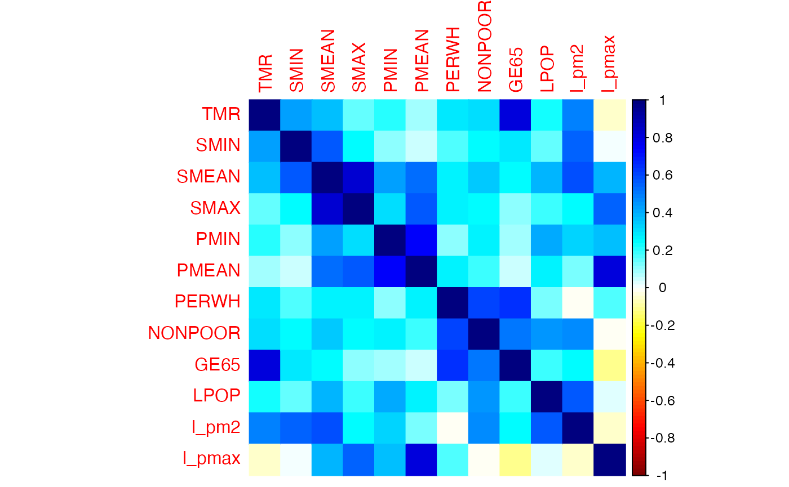
Exercice 10.2 : Régression simple
reg_TMR_GE65 <- lm(TMR~GE65,data=air_pollution)
summary(reg_TMR_GE65)
#>
#> Call:
#> lm(formula = TMR ~ GE65, data = air_pollution)
#>
#> Residuals:
#> Min 1Q Median 3Q Max
#> -174.287 -39.126 -8.287 49.514 189.929
#>
#> Coefficients:
#> Estimate Std. Error t value Pr(>|t|)
#> (Intercept) 426.5237 50.4206 8.459 4.49e-11 ***
#> GE65 5.7469 0.6073 9.464 1.49e-12 ***
#> ---
#> Signif. codes: 0 '***' 0.001 '**' 0.01 '*' 0.05 '.' 0.1 ' ' 1
#>
#> Residual standard error: 71.97 on 48 degrees of freedom
#> Multiple R-squared: 0.6511, Adjusted R-squared: 0.6438
#> F-statistic: 89.56 on 1 and 48 DF, p-value: 1.492e-12
reg_TMR_LPOP <- lm(TMR~LPOP,data=air_pollution)
summary(reg_TMR_LPOP)
#>
#> Call:
#> lm(formula = TMR ~ LPOP, data = air_pollution)
#>
#> Residuals:
#> Min 1Q Median 3Q Max
#> -265.725 -73.857 -0.878 60.211 294.585
#>
#> Coefficients:
#> Estimate Std. Error t value Pr(>|t|)
#> (Intercept) 489.92 254.18 1.927 0.0599 .
#> LPOP 71.64 44.98 1.593 0.1178
#> ---
#> Signif. codes: 0 '***' 0.001 '**' 0.01 '*' 0.05 '.' 0.1 ' ' 1
#>
#> Residual standard error: 118.7 on 48 degrees of freedom
#> Multiple R-squared: 0.05019, Adjusted R-squared: 0.0304
#> F-statistic: 2.537 on 1 and 48 DF, p-value: 0.1178
reg_TMR_NONPOOR <- lm(TMR~NONPOOR,data=air_pollution)
summary(reg_TMR_NONPOOR)
#>
#> Call:
#> lm(formula = TMR ~ NONPOOR, data = air_pollution)
#>
#> Residuals:
#> Min 1Q Median 3Q Max
#> -253.912 -84.067 -7.787 43.187 270.812
#>
#> Coefficients:
#> Estimate Std. Error t value Pr(>|t|)
#> (Intercept) 405.541 212.736 1.906 0.0626 .
#> NONPOOR 5.987 2.600 2.302 0.0257 *
#> ---
#> Signif. codes: 0 '***' 0.001 '**' 0.01 '*' 0.05 '.' 0.1 ' ' 1
#>
#> Residual standard error: 115.6 on 48 degrees of freedom
#> Multiple R-squared: 0.09944, Adjusted R-squared: 0.08068
#> F-statistic: 5.3 on 1 and 48 DF, p-value: 0.0257
reg_TMR_PERWH <- lm(TMR~PERWH,data=air_pollution)
summary(reg_TMR_PERWH)
#>
#> Call:
#> lm(formula = TMR ~ PERWH, data = air_pollution)
#>
#> Residuals:
#> Min 1Q Median 3Q Max
#> -307.890 -67.430 4.312 58.856 285.641
#>
#> Coefficients:
#> Estimate Std. Error t value Pr(>|t|)
#> (Intercept) 589.299 141.000 4.179 0.000123 ***
#> PERWH 3.481 1.600 2.175 0.034602 *
#> ---
#> Signif. codes: 0 '***' 0.001 '**' 0.01 '*' 0.05 '.' 0.1 ' ' 1
#>
#> Residual standard error: 116.2 on 48 degrees of freedom
#> Multiple R-squared: 0.0897, Adjusted R-squared: 0.07074
#> F-statistic: 4.73 on 1 and 48 DF, p-value: 0.0346
reg_TMR_PMEAN <- lm(TMR~PMEAN,data=air_pollution)
summary(reg_TMR_PMEAN)
#>
#> Call:
#> lm(formula = TMR ~ PMEAN, data = air_pollution)
#>
#> Residuals:
#> Min 1Q Median 3Q Max
#> -283.601 -82.968 0.699 58.449 298.242
#>
#> Coefficients:
#> Estimate Std. Error t value Pr(>|t|)
#> (Intercept) 859.4062 53.7979 15.975 <2e-16 ***
#> PMEAN 0.2813 0.4163 0.676 0.502
#> ---
#> Signif. codes: 0 '***' 0.001 '**' 0.01 '*' 0.05 '.' 0.1 ' ' 1
#>
#> Residual standard error: 121.3 on 48 degrees of freedom
#> Multiple R-squared: 0.009422, Adjusted R-squared: -0.01122
#> F-statistic: 0.4565 on 1 and 48 DF, p-value: 0.5025
reg_TMR_PMIN <- lm(TMR~PMIN,data=air_pollution)
summary(reg_TMR_PMIN)
#>
#> Call:
#> lm(formula = TMR ~ PMIN, data = air_pollution)
#>
#> Residuals:
#> Min 1Q Median 3Q Max
#> -278.532 -77.940 6.705 52.070 299.172
#>
#> Coefficients:
#> Estimate Std. Error t value Pr(>|t|)
#> (Intercept) 835.3543 42.9612 19.44 <2e-16 ***
#> PMIN 1.2485 0.8433 1.48 0.145
#> ---
#> Signif. codes: 0 '***' 0.001 '**' 0.01 '*' 0.05 '.' 0.1 ' ' 1
#>
#> Residual standard error: 119.1 on 48 degrees of freedom
#> Multiple R-squared: 0.04367, Adjusted R-squared: 0.02374
#> F-statistic: 2.192 on 1 and 48 DF, p-value: 0.1453
reg_TMR_l_pmax <- lm(TMR~l_pmax,data=air_pollution)
summary(reg_TMR_l_pmax)
#>
#> Call:
#> lm(formula = TMR ~ l_pmax, data = air_pollution)
#>
#> Residuals:
#> Min 1Q Median 3Q Max
#> -270.50 -86.47 -10.79 67.23 305.31
#>
#> Coefficients:
#> Estimate Std. Error t value Pr(>|t|)
#> (Intercept) 967.71 212.38 4.556 3.58e-05 ***
#> l_pmax -13.38 38.34 -0.349 0.729
#> ---
#> Signif. codes: 0 '***' 0.001 '**' 0.01 '*' 0.05 '.' 0.1 ' ' 1
#>
#> Residual standard error: 121.7 on 48 degrees of freedom
#> Multiple R-squared: 0.002529, Adjusted R-squared: -0.01825
#> F-statistic: 0.1217 on 1 and 48 DF, p-value: 0.7287
reg_TMR_SMEAN <- lm(TMR~SMEAN,data=air_pollution)
summary(reg_TMR_SMEAN)
#>
#> Call:
#> lm(formula = TMR ~ SMEAN, data = air_pollution)
#>
#> Residuals:
#> Min 1Q Median 3Q Max
#> -266.672 -62.242 -0.821 57.914 278.902
#>
#> Coefficients:
#> Estimate Std. Error t value Pr(>|t|)
#> (Intercept) 813.1775 33.3272 24.40 < 2e-16 ***
#> SMEAN 0.8218 0.2977 2.76 0.00816 **
#> ---
#> Signif. codes: 0 '***' 0.001 '**' 0.01 '*' 0.05 '.' 0.1 ' ' 1
#>
#> Residual standard error: 113.2 on 48 degrees of freedom
#> Multiple R-squared: 0.137, Adjusted R-squared: 0.119
#> F-statistic: 7.618 on 1 and 48 DF, p-value: 0.008158
reg_TMR_SMIN <- lm(TMR~SMIN,data=air_pollution)
summary(reg_TMR_SMIN)
#>
#> Call:
#> lm(formula = TMR ~ SMIN, data = air_pollution)
#>
#> Residuals:
#> Min 1Q Median 3Q Max
#> -275.271 -73.666 -1.265 68.334 239.169
#>
#> Coefficients:
#> Estimate Std. Error t value Pr(>|t|)
#> (Intercept) 816.3143 27.9532 29.203 < 2e-16 ***
#> SMIN 1.6374 0.4908 3.336 0.00165 **
#> ---
#> Signif. codes: 0 '***' 0.001 '**' 0.01 '*' 0.05 '.' 0.1 ' ' 1
#>
#> Residual standard error: 109.8 on 48 degrees of freedom
#> Multiple R-squared: 0.1882, Adjusted R-squared: 0.1713
#> F-statistic: 11.13 on 1 and 48 DF, p-value: 0.001647
reg_TMR_SMAX <- lm(TMR~SMAX,data=air_pollution)
summary(reg_TMR_SMAX)
#>
#> Call:
#> lm(formula = TMR ~ SMAX, data = air_pollution)
#>
#> Residuals:
#> Min 1Q Median 3Q Max
#> -274.103 -81.565 -1.544 57.872 288.864
#>
#> Coefficients:
#> Estimate Std. Error t value Pr(>|t|)
#> (Intercept) 864.0365 32.3440 26.714 <2e-16 ***
#> SMAX 0.1356 0.1250 1.084 0.284
#> ---
#> Signif. codes: 0 '***' 0.001 '**' 0.01 '*' 0.05 '.' 0.1 ' ' 1
#>
#> Residual standard error: 120.4 on 48 degrees of freedom
#> Multiple R-squared: 0.02391, Adjusted R-squared: 0.003578
#> F-statistic: 1.176 on 1 and 48 DF, p-value: 0.2836
reg_TMR_l_pm2 <- lm(TMR~l_pm2,data=air_pollution)
summary(reg_TMR_l_pm2)
#>
#> Call:
#> lm(formula = TMR ~ l_pm2, data = air_pollution)
#>
#> Residuals:
#> Min 1Q Median 3Q Max
#> -250.718 -59.062 -5.373 72.194 241.352
#>
#> Coefficients:
#> Estimate Std. Error t value Pr(>|t|)
#> (Intercept) 665.05 60.97 10.908 1.36e-14 ***
#> l_pm2 60.00 15.49 3.873 0.000325 ***
#> ---
#> Signif. codes: 0 '***' 0.001 '**' 0.01 '*' 0.05 '.' 0.1 ' ' 1
#>
#> Residual standard error: 106.3 on 48 degrees of freedom
#> Multiple R-squared: 0.2381, Adjusted R-squared: 0.2222
#> F-statistic: 15 on 1 and 48 DF, p-value: 0.0003254Exercice 10.3 : Analyse des résidus et des observations
Analyse du modèle TMR vs GE65
par(oma=c(0,12,1,5)+1,bg="white")
plot(air_pollution$GE65, air_pollution$TMR, type = "n",xlab="GE65",ylab="TMR",main="Evolution de TMR en fonction de GE65")
text(air_pollution$GE65, air_pollution$TMR, air_pollution$CITY,col='black',cex=0.7)
rstudent_leverage <- olsrr::ols_prep_rstudlev_data(reg_TMR_GE65)
rstudent <- rstudent_leverage$levrstud$rstudent
result_TMR_GE65 <- data.frame(air_pollution,rstudent)
par(oma=c(0,12,1,5)+1,bg="white")
plot(result_TMR_GE65$GE65, result_TMR_GE65$rstudent, type = "n",xlab="GE65",ylab="RStudents",main="Comportement des RStudents")
text(result_TMR_GE65$GE65, result_TMR_GE65$rstudent, result_TMR_GE65$CITY,col='black',cex=0.7)
abline(h=c(-1.99,0,1.99))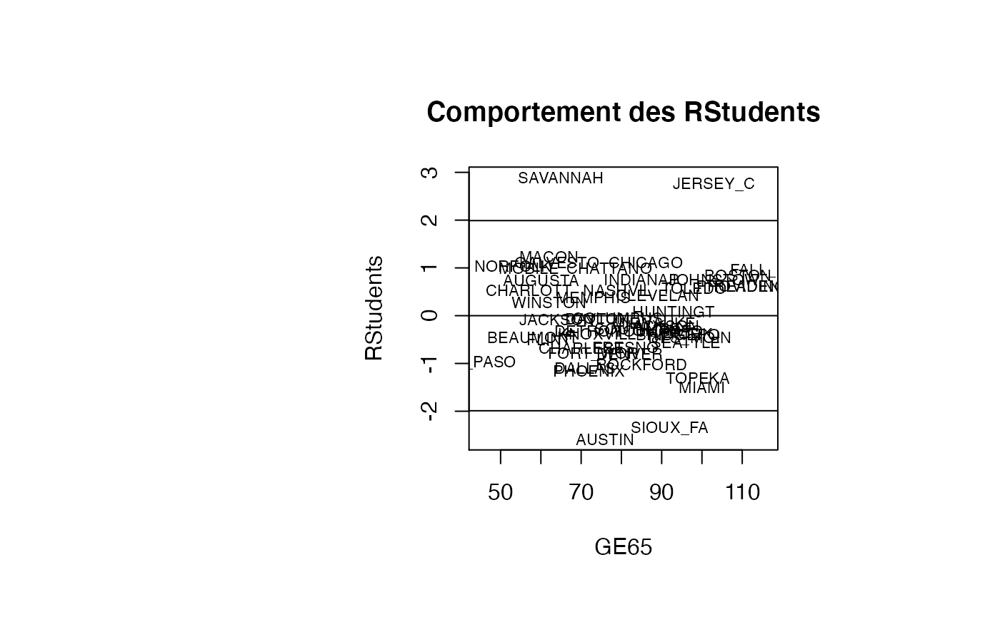
leverage <- rstudent_leverage$levrstud$leverage
result_TMR_GE65 <- data.frame(result_TMR_GE65,leverage)
par(oma=c(0,12,1,5)+1,bg="white")
plot(result_TMR_GE65$GE65, result_TMR_GE65$leverage, type = "n",xlab="GE65",ylab="Levier",main="Comportement des leviers")
text(result_TMR_GE65$GE65, result_TMR_GE65$leverage, result_TMR_GE65$CITY,col='black',cex=0.7)
abline(h=0.08)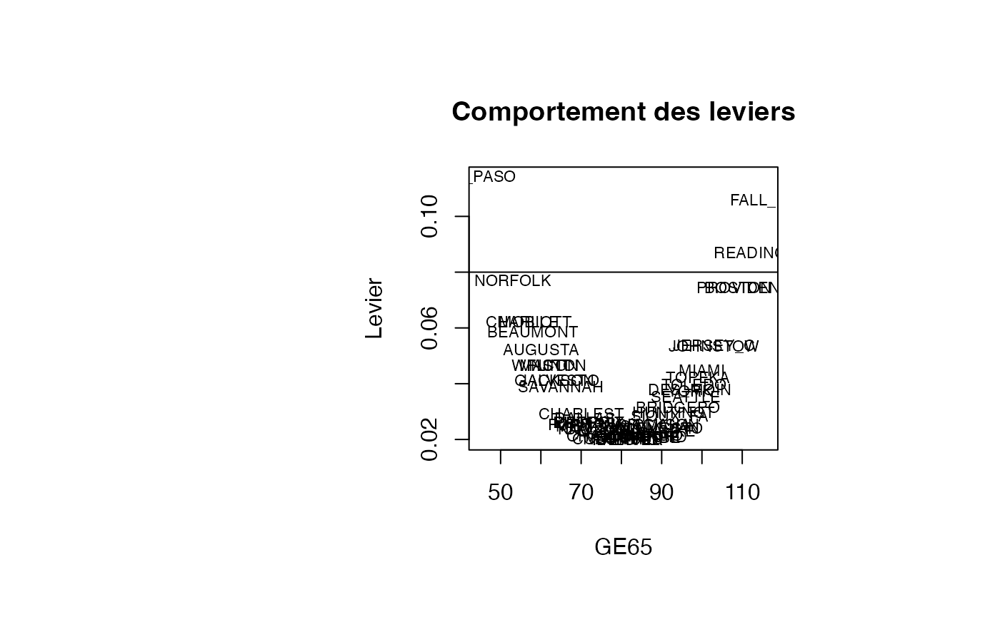
cookd <- matrix(0,nrow=50)
for (i in 1:50)
{cookd[i]=(leverage[i]/(1-leverage[i]))*(resid_std[i]^2/(2*(1-leverage[i])))}
result_TMR_GE65 <- data.frame(result_TMR_GE65,cookd)
par(oma=c(0,12,1,5)+1,bg="white")
plot(result_TMR_GE65$GE65, result_TMR_GE65$cookd, type = "n",xlab="GE65",ylab="D de Cook",main="Comportement des D de Cook")
text(result_TMR_GE65$GE65, result_TMR_GE65$cookd, result_TMR_GE65$CITY,col='black',cex=0.7)
abline(h=0.08)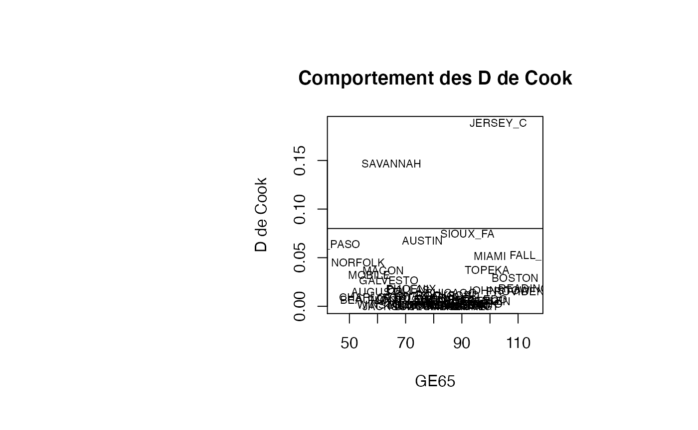
Analyse du modèle TMR vs l_pm2
par(oma=c(0,12,1,5)+1,bg="white")
plot(air_pollution$l_pm2, air_pollution$TMR, type = "n",xlab="l_pm2",ylab="TMR",main="Evolution de TMR en fonction de l_pm2")
text(air_pollution$l_pm2, air_pollution$TMR, air_pollution$CITY,col='black',cex=0.7)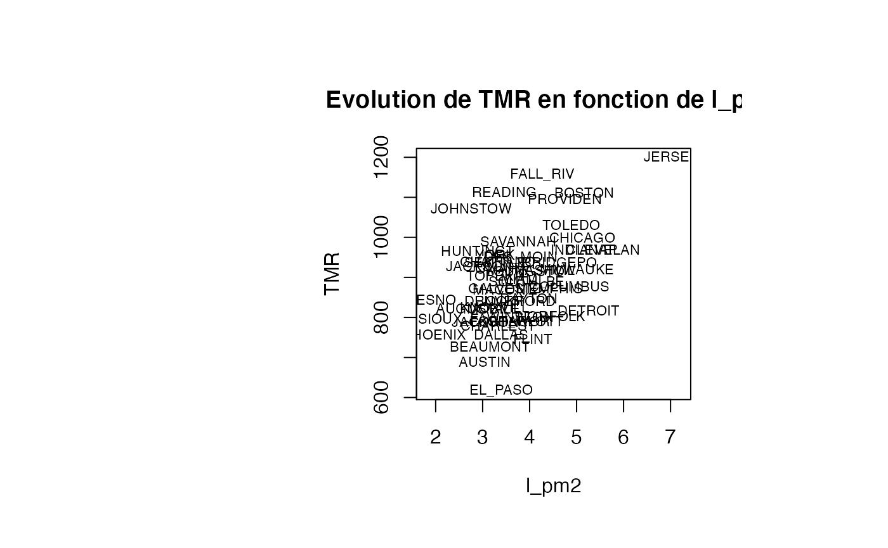
rstudent_leverage <- olsrr::ols_prep_rstudlev_data(reg_TMR_l_pm2)
rstudent <- rstudent_leverage$levrstud$rstudent
result_TMR_l_pm2 <- data.frame(air_pollution,rstudent)
par(oma=c(0,12,1,5)+1,bg="white")
plot(result_TMR_l_pm2$l_pm2, result_TMR_l_pm2$rstudent, type = "n",xlab="l_pm2",ylab="RStudents",main="Comportement des RStudents")
text(result_TMR_l_pm2$l_pm2, result_TMR_l_pm2$rstudent, result_TMR_l_pm2$CITY,col='black',cex=0.7)
abline(h=c(-1.99,0,1.99))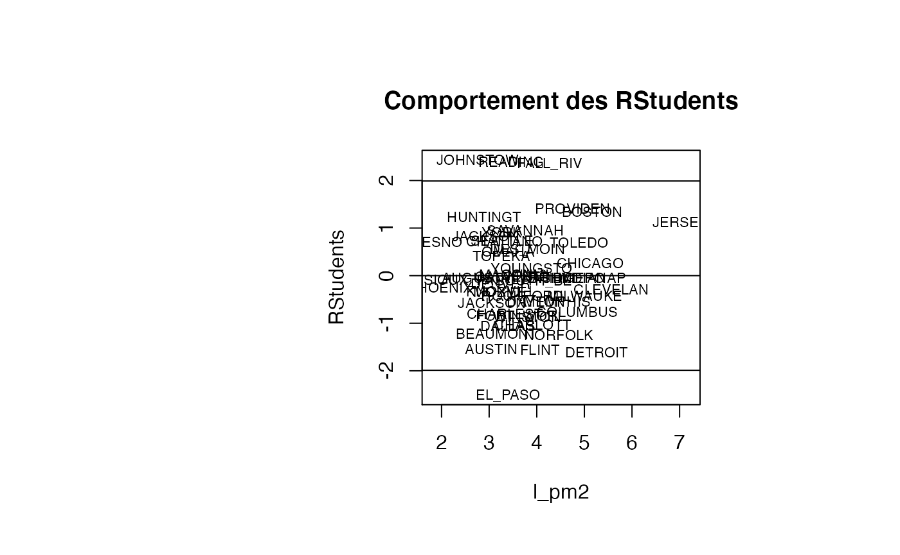
leverage <- rstudent_leverage$levrstud$leverage
result_TMR_l_pm2 <- data.frame(result_TMR_l_pm2,leverage)
par(oma=c(0,12,1,5)+1,bg="white")
plot(result_TMR_l_pm2$l_pm2, result_TMR_l_pm2$leverage, type = "n",xlab="l_pm2",ylab="Levier",main="Comportement des leviers")
text(result_TMR_l_pm2$l_pm2, result_TMR_l_pm2$leverage, result_TMR_l_pm2$CITY,col='black',cex=0.7)
abline(h=0.08)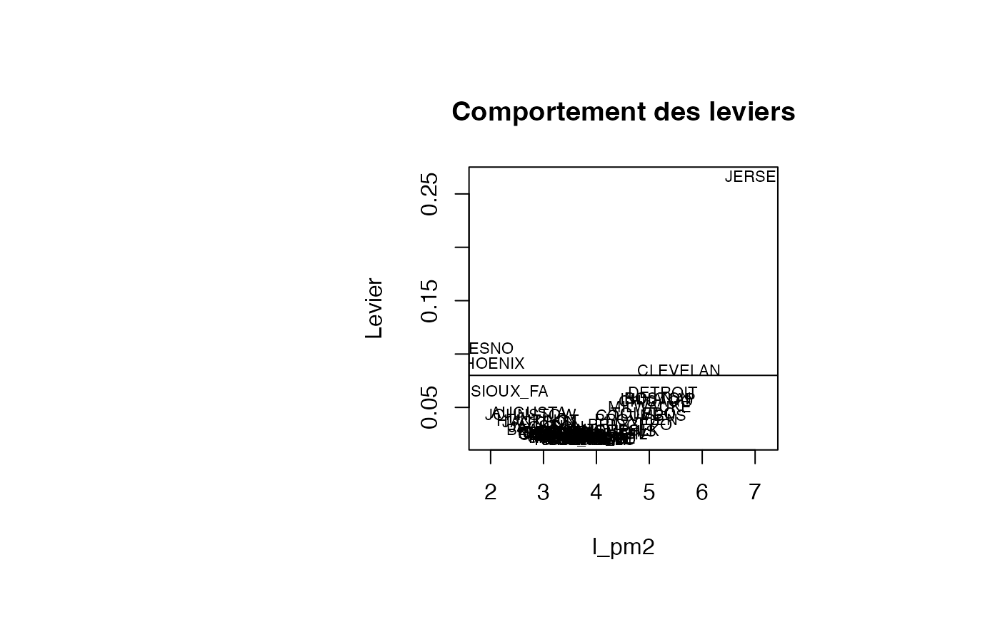
cookd <- matrix(0,nrow=50)
for (i in 1:50)
{cookd[i]=(leverage[i]/(1-leverage[i]))*(resid_std[i]^2/(2*(1-leverage[i])))}
result_TMR_l_pm2 <- data.frame(result_TMR_l_pm2,cookd)
par(oma=c(0,12,1,5)+1,bg="white")
plot(result_TMR_l_pm2$l_pm2, result_TMR_l_pm2$cookd, type = "n",xlab="l_pm2",ylab="D de Cook",main="Comportement des D de Cook")
text(result_TMR_l_pm2$l_pm2, result_TMR_l_pm2$cookd, result_TMR_l_pm2$CITY,col='black',cex=0.7)
abline(h=0.08)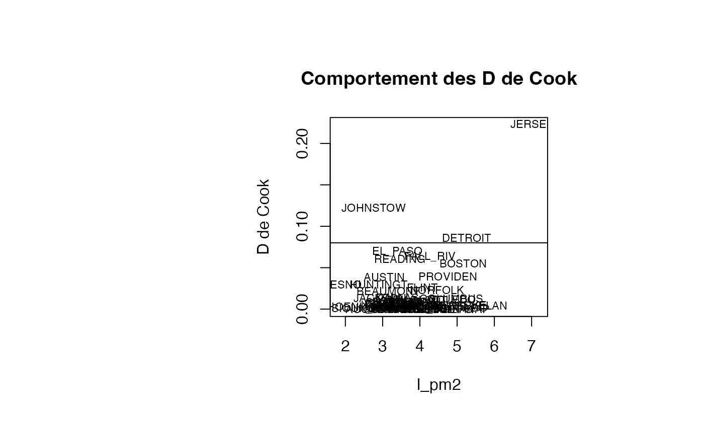
Analyse du modèle TMR vs SMIN
par(oma=c(0,12,1,5)+1,bg="white")
plot(air_pollution$SMIN, air_pollution$TMR, type = "n",xlab="SMIN",ylab="TMR",main="Evolution de TMR en fonction de SMIN")
text(air_pollution$SMIN, air_pollution$TMR, air_pollution$CITY,col='black',cex=0.7)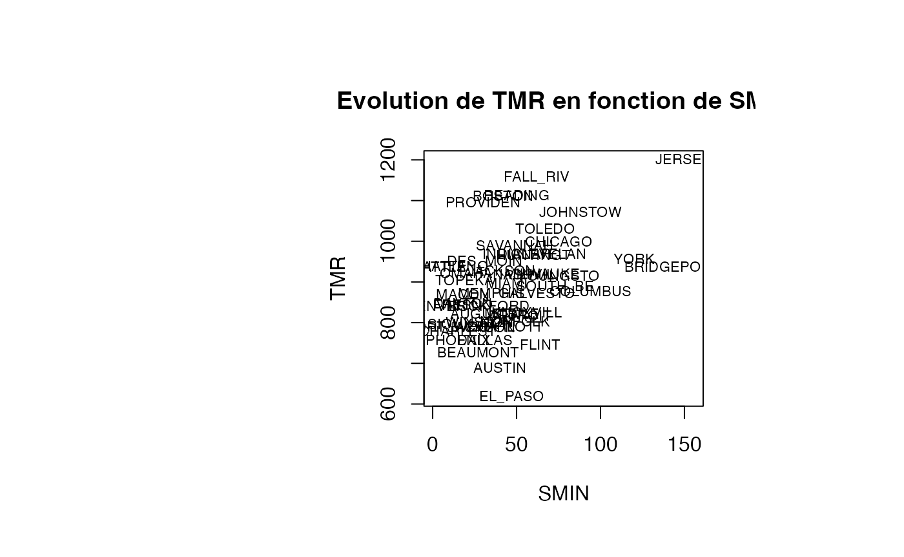
rstudent_leverage <- olsrr::ols_prep_rstudlev_data(reg_TMR_SMIN)
rstudent <- rstudent_leverage$levrstud$rstudent
result_TMR_SMIN <- data.frame(air_pollution,rstudent)
par(oma=c(0,12,1,5)+1,bg="white")
plot(result_TMR_SMIN$SMIN, result_TMR_SMIN$rstudent, type = "n",xlab="SMIN",ylab="RStudents",main="Comportement des RStudents")
text(result_TMR_SMIN$SMIN, result_TMR_SMIN$rstudent, result_TMR_SMIN$CITY,col='black',cex=0.7)
abline(h=c(-1.99,0,1.99))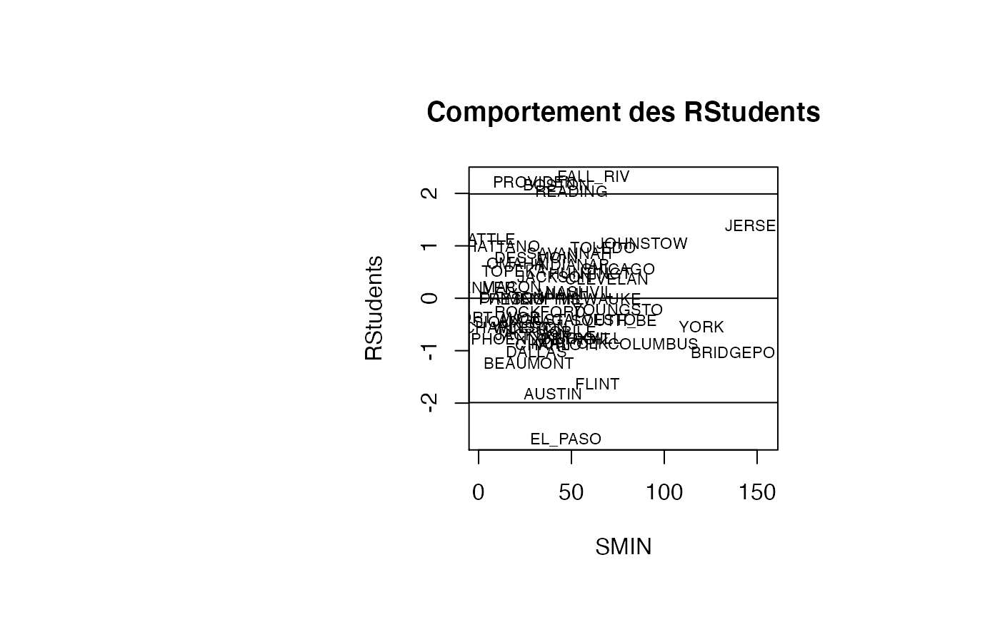
leverage <- rstudent_leverage$levrstud$leverage
result_TMR_SMIN <- data.frame(result_TMR_SMIN,leverage)
par(oma=c(0,12,1,5)+1,bg="white")
plot(result_TMR_SMIN$SMIN, result_TMR_SMIN$leverage, type = "n",xlab="SMIN",ylab="Levier",main="Comportement des leviers")
text(result_TMR_SMIN$SMIN, result_TMR_SMIN$leverage, result_TMR_SMIN$CITY,col='black',cex=0.7)
abline(h=0.08)
cookd <- matrix(0,nrow=50)
for (i in 1:50)
{cookd[i]=(leverage[i]/(1-leverage[i]))*(resid_std[i]^2/(2*(1-leverage[i])))}
result_TMR_SMIN <- data.frame(result_TMR_SMIN,cookd)
par(oma=c(0,12,1,5)+1,bg="white")
plot(result_TMR_SMIN$SMIN, result_TMR_SMIN$cookd, type = "n",xlab="SMIN",ylab="D de Cook",main="Comportement des D de Cook")
text(result_TMR_SMIN$SMIN, result_TMR_SMIN$cookd, result_TMR_SMIN$CITY,col='black',cex=0.7)
abline(h=0.08)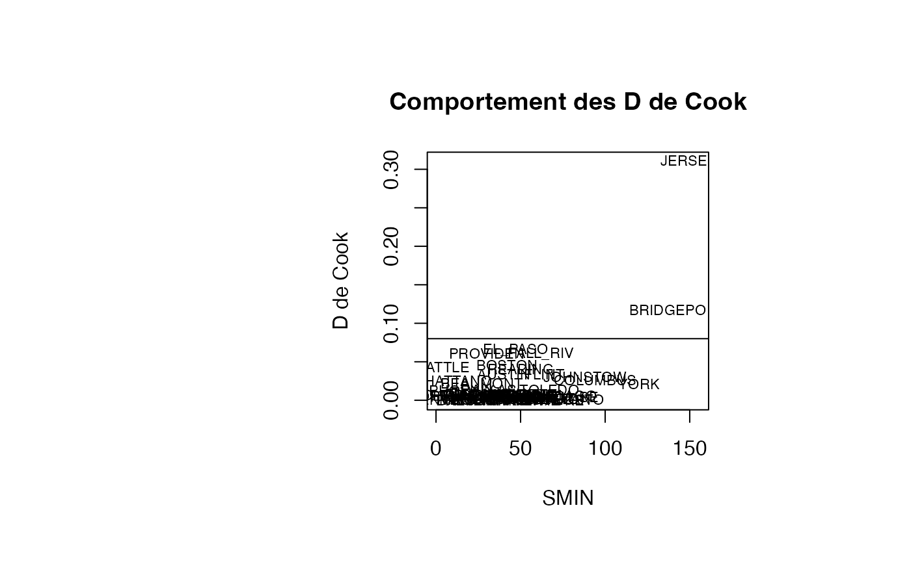
Analyse du modèle TMR vs SMEAN
par(oma=c(0,12,1,5)+1,bg="white")
plot(air_pollution$SMEAN, air_pollution$TMR, type = "n",xlab="SMEAN",ylab="TMR",main="Evolution de TMR en fonction de SMEAN")
text(air_pollution$SMEAN, air_pollution$TMR, air_pollution$CITY,col='black',cex=0.7)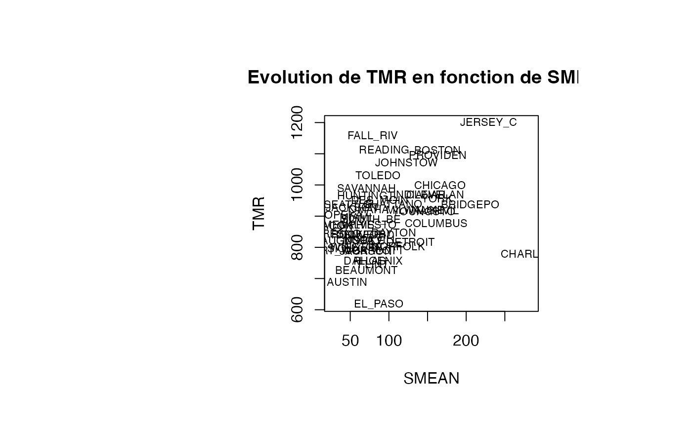
rstudent_leverage <- olsrr::ols_prep_rstudlev_data(reg_TMR_SMEAN)
rstudent <- rstudent_leverage$levrstud$rstudent
result_TMR_SMEAN <- data.frame(air_pollution,rstudent)
par(oma=c(0,12,1,5)+1,bg="white")
plot(result_TMR_SMEAN$SMEAN, result_TMR_SMEAN$rstudent, type = "n",xlab="SMEAN",ylab="RStudents",main="Comportement des RStudents")
text(result_TMR_SMEAN$SMEAN, result_TMR_SMEAN$rstudent, result_TMR_SMEAN$CITY,col='black',cex=0.7)
abline(h=c(-1.99,0,1.99))
leverage <- rstudent_leverage$levrstud$leverage
result_TMR_SMEAN <- data.frame(result_TMR_SMEAN,leverage)
par(oma=c(0,12,1,5)+1,bg="white")
plot(result_TMR_SMEAN$SMEAN, result_TMR_SMEAN$leverage, type = "n",xlab="SMEAN",ylab="Levier",main="Comportement des leviers")
text(result_TMR_SMEAN$SMEAN, result_TMR_SMEAN$leverage, result_TMR_SMEAN$CITY,col='black',cex=0.7)
abline(h=0.08)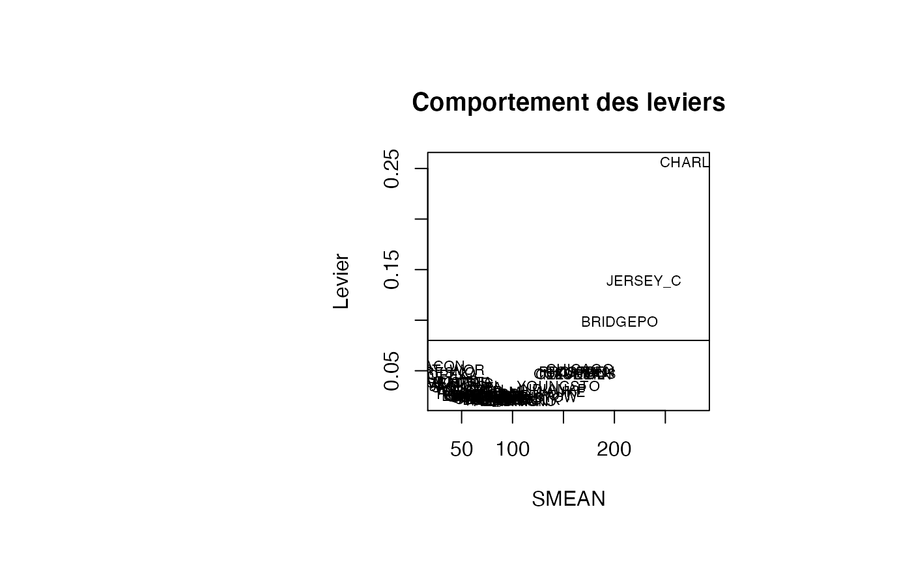
cookd <- matrix(0,nrow=50)
for (i in 1:50)
{cookd[i]=(leverage[i]/(1-leverage[i]))*(resid_std[i]^2/(2*(1-leverage[i])))}
result_TMR_SMEAN <- data.frame(result_TMR_SMEAN,cookd)
par(oma=c(0,12,1,5)+1,bg="white")
plot(result_TMR_SMEAN$SMEAN, result_TMR_SMEAN$cookd, type = "n",xlab="SMEAN",ylab="D de Cook",main="Comportement des D de Cook")
text(result_TMR_SMEAN$SMEAN, result_TMR_SMEAN$cookd, result_TMR_SMEAN$CITY,col='black',cex=0.7)
abline(h=0.08)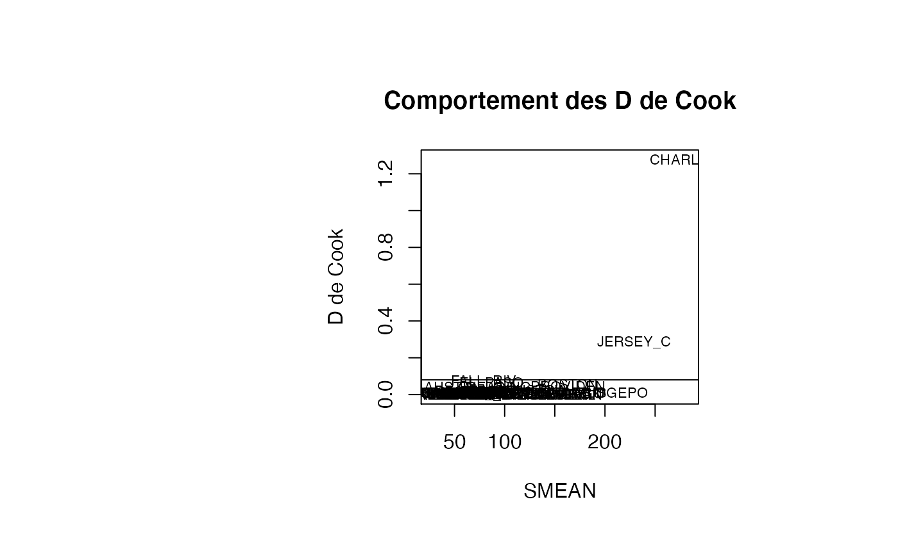
Analyse du modèle TMR vs NOOPOOR
par(oma=c(0,12,1,5)+1,bg="white")
plot(air_pollution$NONPOOR, air_pollution$TMR, type = "n",xlab="NONPOOR",ylab="TMR",main="Evolution de TMR en fonction de NONPOOR")
text(air_pollution$NONPOOR, air_pollution$TMR, air_pollution$CITY,col='black',cex=0.7)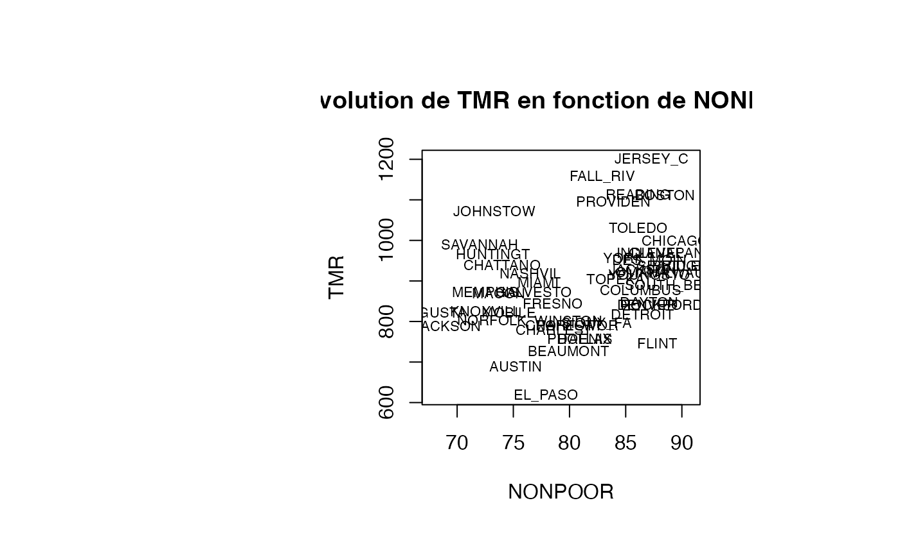
rstudent_leverage <- olsrr::ols_prep_rstudlev_data(reg_TMR_NONPOOR)
rstudent <- rstudent_leverage$levrstud$rstudent
result_TMR_NONPOOR <- data.frame(air_pollution,rstudent)
par(oma=c(0,12,1,5)+1,bg="white")
plot(result_TMR_NONPOOR$NONPOOR, result_TMR_NONPOOR$rstudent, type = "n",xlab="NONPOOR",ylab="RStudents",main="Comportement des RStudents")
text(result_TMR_NONPOOR$NONPOOR, result_TMR_NONPOOR$rstudent, result_TMR_NONPOOR$CITY,col='black',cex=0.7)
abline(h=c(-1.99,0,1.99))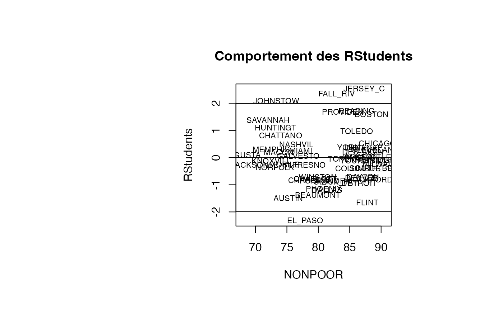
leverage <- rstudent_leverage$levrstud$leverage
result_TMR_NONPOOR <- data.frame(result_TMR_NONPOOR,leverage)
par(oma=c(0,12,1,5)+1,bg="white")
plot(result_TMR_NONPOOR$NONPOOR, result_TMR_NONPOOR$leverage, type = "n",xlab="NONPOOR",ylab="Levier",main="Comportement des leviers")
text(result_TMR_NONPOOR$NONPOOR, result_TMR_NONPOOR$leverage, result_TMR_NONPOOR$CITY,col='black',cex=0.7)
abline(h=0.08)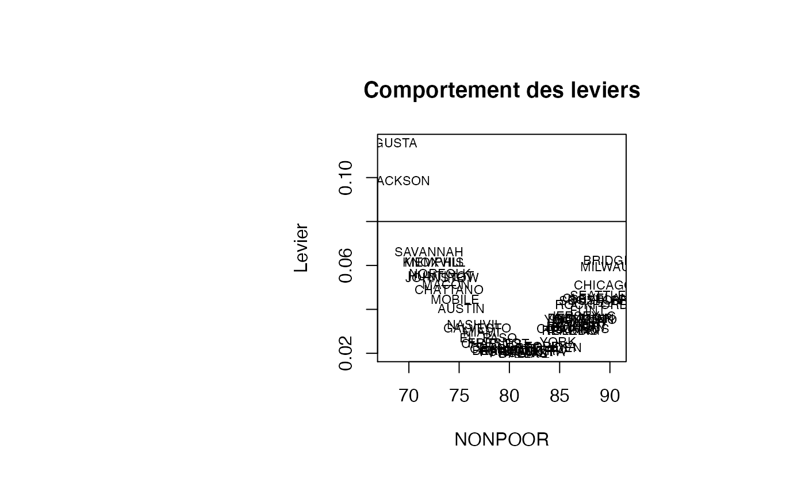
cookd <- matrix(0,nrow=50)
for (i in 1:50)
{cookd[i]=(leverage[i]/(1-leverage[i]))*(resid_std[i]^2/(2*(1-leverage[i])))}
result_TMR_NONPOOR <- data.frame(result_TMR_NONPOOR,cookd)
par(oma=c(0,12,1,5)+1,bg="white")
plot(result_TMR_NONPOOR$NONPOOR, result_TMR_NONPOOR$cookd, type = "n",xlab="NONPOOR",ylab="D de Cook",main="Comportement des D de Cook")
text(result_TMR_NONPOOR$NONPOOR, result_TMR_NONPOOR$cookd, result_TMR_NONPOOR$CITY,col='black',cex=0.7)
abline(h=0.08)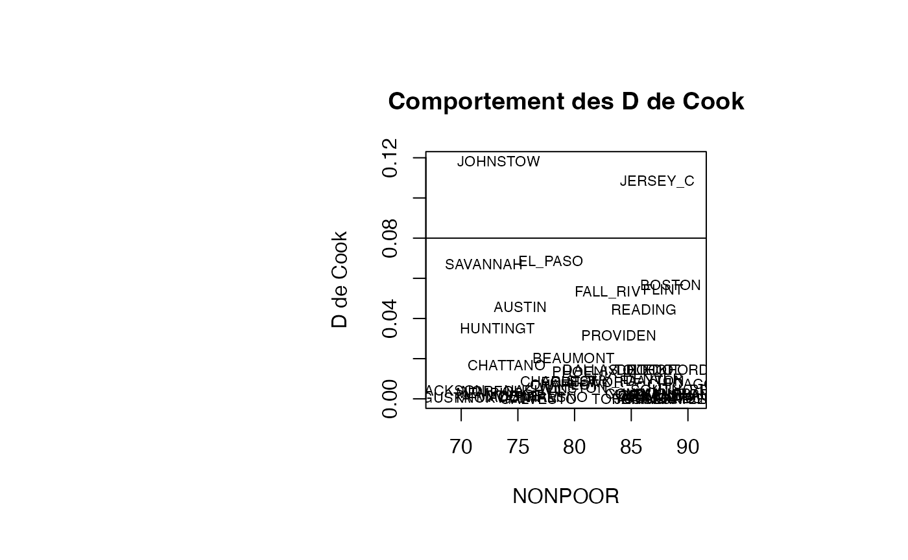
Analyse du modèle TMR vs PERWH
par(oma=c(0,12,1,5)+1,bg="white")
plot(air_pollution$PERWH, air_pollution$TMR, type = "n",xlab="PERWH",ylab="TMR",main="Evolution de TMR en fonction de PERWH")
text(air_pollution$PERWH, air_pollution$TMR, air_pollution$CITY,col='black',cex=0.7)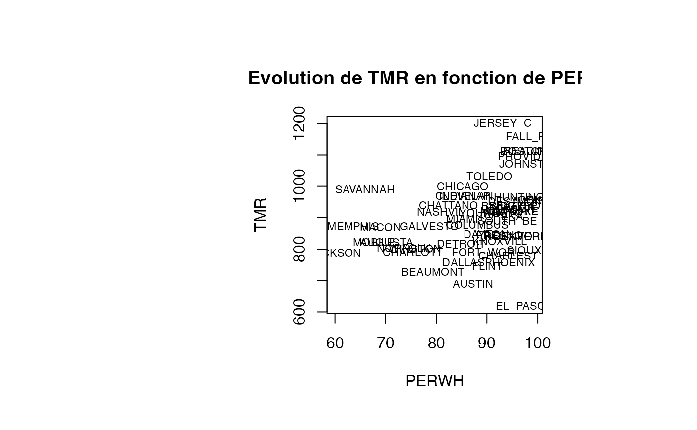
rstudent_leverage <- olsrr::ols_prep_rstudlev_data(reg_TMR_PERWH)
rstudent <- rstudent_leverage$levrstud$rstudent
result_TMR_PERWH <- data.frame(air_pollution,rstudent)
par(oma=c(0,12,1,5)+1,bg="white")
plot(result_TMR_PERWH$PERWH, result_TMR_PERWH$rstudent, type = "n",xlab="PERWH",ylab="RStudents",main="Comportement des RStudents")
text(result_TMR_PERWH$PERWH, result_TMR_PERWH$rstudent, result_TMR_PERWH$CITY,col='black',cex=0.7)
abline(h=c(-1.99,0,1.99))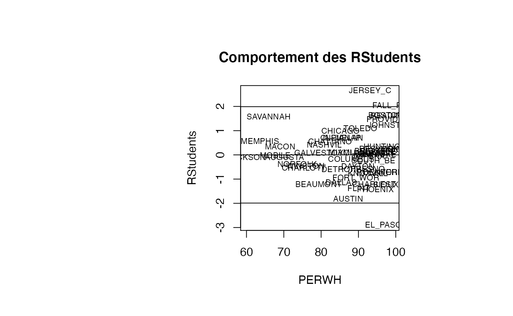
leverage <- rstudent_leverage$levrstud$leverage
result_TMR_PERWH <- data.frame(result_TMR_PERWH,leverage)
par(oma=c(0,12,1,5)+1,bg="white")
plot(result_TMR_PERWH$PERWH, result_TMR_PERWH$leverage, type = "n",xlab="PERWH",ylab="Levier",main="Comportement des leviers")
text(result_TMR_PERWH$PERWH, result_TMR_PERWH$leverage, result_TMR_PERWH$CITY,col='black',cex=0.7)
abline(h=0.08)
cookd <- matrix(0,nrow=50)
for (i in 1:50)
{cookd[i]=(leverage[i]/(1-leverage[i]))*(resid_std[i]^2/(2*(1-leverage[i])))}
result_TMR_PERWH <- data.frame(result_TMR_PERWH,cookd)
par(oma=c(0,12,1,5)+1,bg="white")
plot(result_TMR_PERWH$PERWH, result_TMR_PERWH$cookd, type = "n",xlab="PERWH",ylab="D de Cook",main="Comportement des D de Cook")
text(result_TMR_PERWH$PERWH, result_TMR_PERWH$cookd, result_TMR_PERWH$CITY,col='black',cex=0.7)
abline(h=0.08)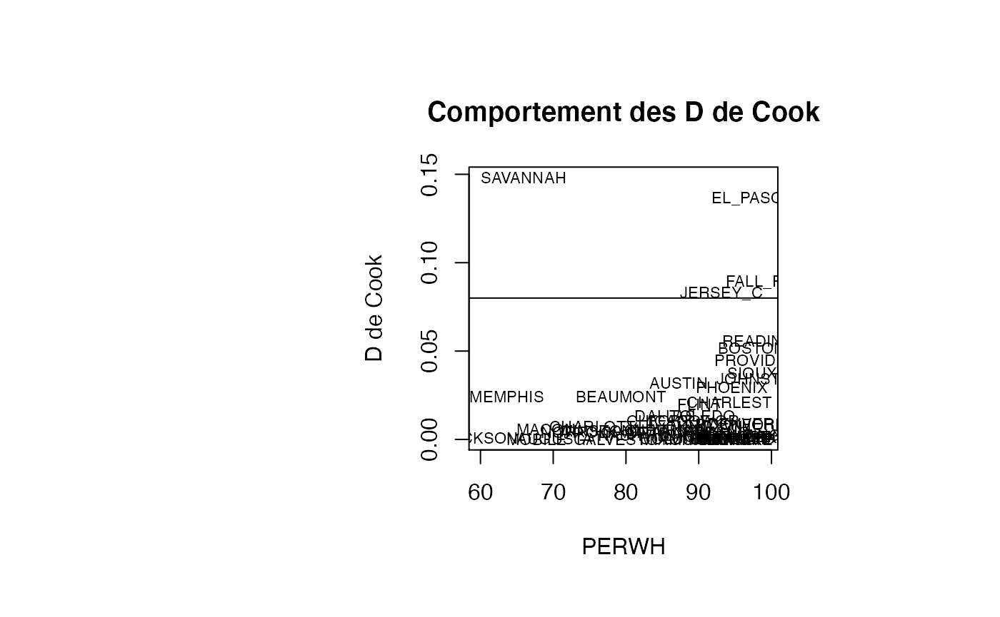
Exercices 10.4 : Intervalles de confiance et de prévision
Analyse du modèle TMR vs GE65
IC_95 <- predict(reg_TMR_GE65, interval="confidence")
IC_95 <- data.frame(IC_95)
binf_IC_95 <- IC_95$lwr
bsup_IC_95 <- IC_95$upr
result_TMR_GE65 <- data.frame(air_pollution,binf_IC_95,bsup_IC_95)
par(oma=c(0,12,1,5)+1,bg="white")
plot(air_pollution$GE65, air_pollution$TMR, type = "p",xlab="GE65",ylab="TMR")
abline(reg_TMR_GE65)
matlines(result_TMR_GE65$GE65,IC_95[,2:3],lty=c(2,2),col="black")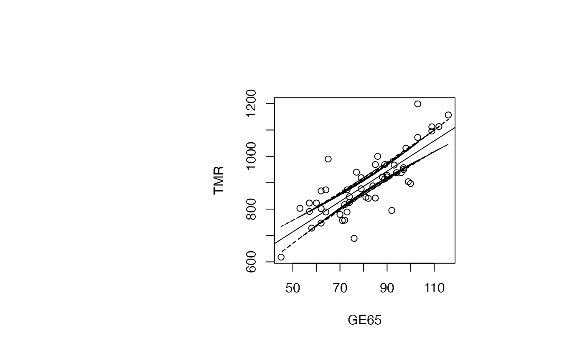
IP_95 <- predict(reg_TMR_GE65, interval="prediction")
#> Warning in predict.lm(reg_TMR_GE65, interval = "prediction"): predictions on current data refer to _future_ responses
IP_95 <- data.frame(IP_95)
binf_IP_95 <- IP_95$lwr
bsup_IP_95 <- IP_95$upr
result_TMR_GE65 <- data.frame(result_TMR_GE65,binf_IP_95,bsup_IP_95)
par(oma=c(0,12,1,5)+1,bg="white")
plot(air_pollution$GE65, air_pollution$TMR, type = "n",xlab="GE65",ylab="TMR")
text(air_pollution$GE65, air_pollution$TMR, air_pollution$CITY,col='black',cex=0.7)
abline(reg_TMR_GE65)
matlines(air_pollution$GE65,IP_95[,2:3],lty=c(2,2),col="black")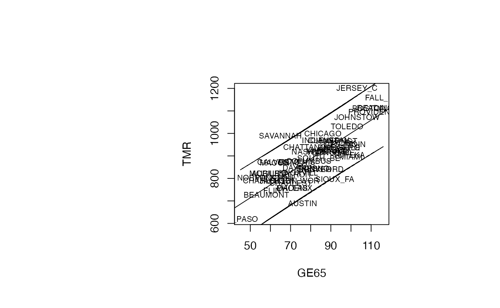
Analyse du modèle TMR vs l_pm2
IC_95 <- predict(reg_TMR_l_pm2, interval="confidence")
IC_95 <- data.frame(IC_95)
binf_IC_95 <- IC_95$lwr
bsup_IC_95 <- IC_95$upr
result_TMR_l_pm2 <- data.frame(air_pollution,binf_IC_95,bsup_IC_95)
par(oma=c(0,12,1,5)+1,bg="white")
plot(air_pollution$l_pm2, air_pollution$TMR, type = "p",xlab="l_pm2",ylab="TMR")
abline(reg_TMR_l_pm2)
matlines(result_TMR_l_pm2$l_pm2,IC_95[,2:3],lty=c(2,2),col="black")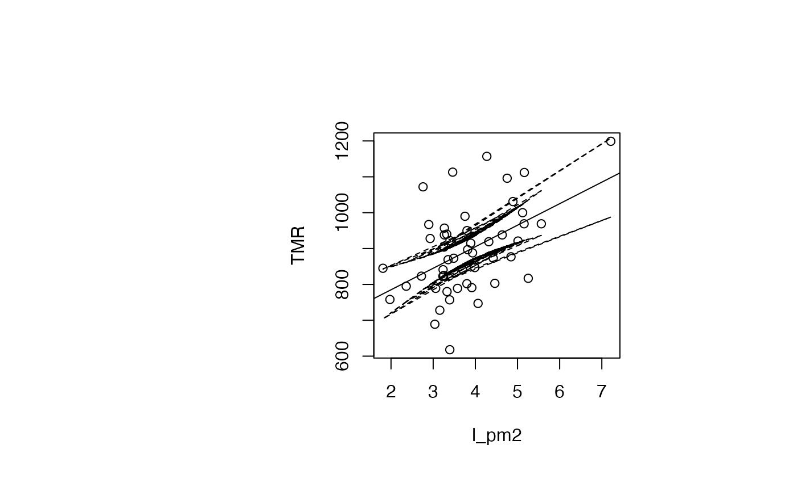
IP_95 <- predict(reg_TMR_l_pm2, interval="prediction")
#> Warning in predict.lm(reg_TMR_l_pm2, interval = "prediction"): predictions on current data refer to _future_ responses
IP_95 <- data.frame(IP_95)
binf_IP_95 <- IP_95$lwr
bsup_IP_95 <- IP_95$upr
result_TMR_l_pm2 <- data.frame(result_TMR_l_pm2,binf_IP_95,bsup_IP_95)
par(oma=c(0,12,1,5)+1,bg="white")
plot(air_pollution$l_pm2, air_pollution$TMR, type = "n",xlab="l_pm2",ylab="TMR")
text(air_pollution$l_pm2, air_pollution$TMR, air_pollution$CITY,col='black',cex=0.7)
abline(reg_TMR_l_pm2)
matlines(air_pollution$l_pm2,IP_95[,2:3],lty=c(2,2),col="black")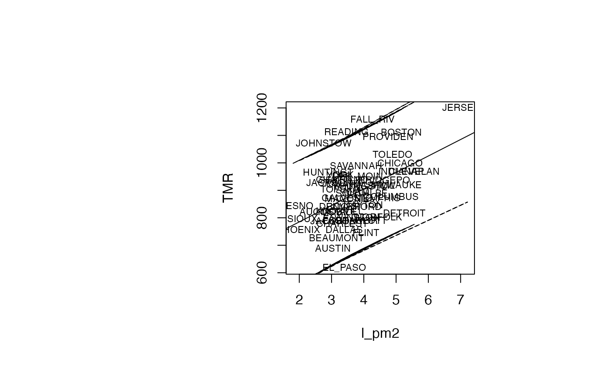
Analyse du modèle TMR vs SMIN
IC_95 <- predict(reg_TMR_SMIN, interval="confidence")
IC_95 <- data.frame(IC_95)
binf_IC_95 <- IC_95$lwr
bsup_IC_95 <- IC_95$upr
result_TMR_SMIN <- data.frame(air_pollution,binf_IC_95,bsup_IC_95)
par(oma=c(0,12,1,5)+1,bg="white")
plot(air_pollution$SMIN, air_pollution$TMR, type = "p",xlab="SMIN",ylab="TMR")
abline(reg_TMR_SMIN)
matlines(result_TMR_SMIN$SMIN,IC_95[,2:3],lty=c(2,2),col="black")
IP_95 <- predict(reg_TMR_SMIN, interval="prediction")
#> Warning in predict.lm(reg_TMR_SMIN, interval = "prediction"): predictions on current data refer to _future_ responses
IP_95 <- data.frame(IP_95)
binf_IP_95 <- IP_95$lwr
bsup_IP_95 <- IP_95$upr
result_TMR_SMIN <- data.frame(result_TMR_SMIN,binf_IP_95,bsup_IP_95)
par(oma=c(0,12,1,5)+1,bg="white")
plot(air_pollution$SMIN, air_pollution$TMR, type = "n",xlab="SMIN",ylab="TMR")
text(air_pollution$SMIN, air_pollution$TMR, air_pollution$CITY,col='black',cex=0.7)
abline(reg_TMR_SMIN)
matlines(air_pollution$SMIN,IP_95[,2:3],lty=c(2,2),col="black")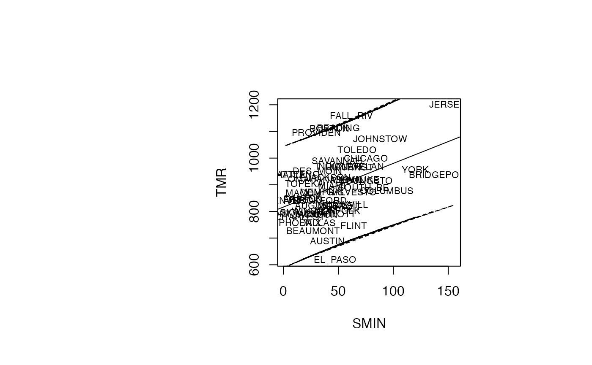
Analyse du modèle TMR vs SMEAN
IC_95 <- predict(reg_TMR_SMEAN, interval="confidence")
IC_95 <- data.frame(IC_95)
binf_IC_95 <- IC_95$lwr
bsup_IC_95 <- IC_95$upr
result_TMR_SMEAN <- data.frame(air_pollution,binf_IC_95,bsup_IC_95)
par(oma=c(0,12,1,5)+1,bg="white")
plot(air_pollution$SMEAN, air_pollution$TMR, type = "p",xlab="SMEAN",ylab="TMR")
abline(reg_TMR_SMEAN)
matlines(result_TMR_SMEAN$SMEAN,IC_95[,2:3],lty=c(2,2),col="black")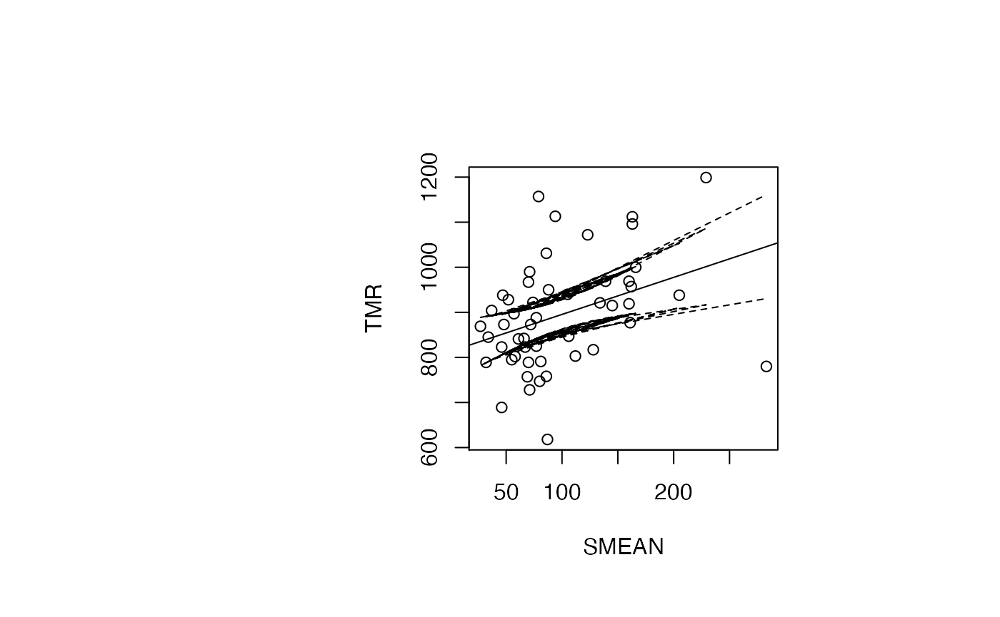
IP_95 <- predict(reg_TMR_SMEAN, interval="prediction")
#> Warning in predict.lm(reg_TMR_SMEAN, interval = "prediction"): predictions on current data refer to _future_ responses
IP_95 <- data.frame(IP_95)
binf_IP_95 <- IP_95$lwr
bsup_IP_95 <- IP_95$upr
result_TMR_SMEAN <- data.frame(result_TMR_SMEAN,binf_IP_95,bsup_IP_95)
par(oma=c(0,12,1,5)+1,bg="white")
plot(air_pollution$SMEAN, air_pollution$TMR, type = "n",xlab="SMEAN",ylab="TMR")
text(air_pollution$SMEAN, air_pollution$TMR, air_pollution$CITY,col='black',cex=0.7)
abline(reg_TMR_SMEAN)
matlines(air_pollution$SMEAN,IP_95[,2:3],lty=c(2,2),col="black")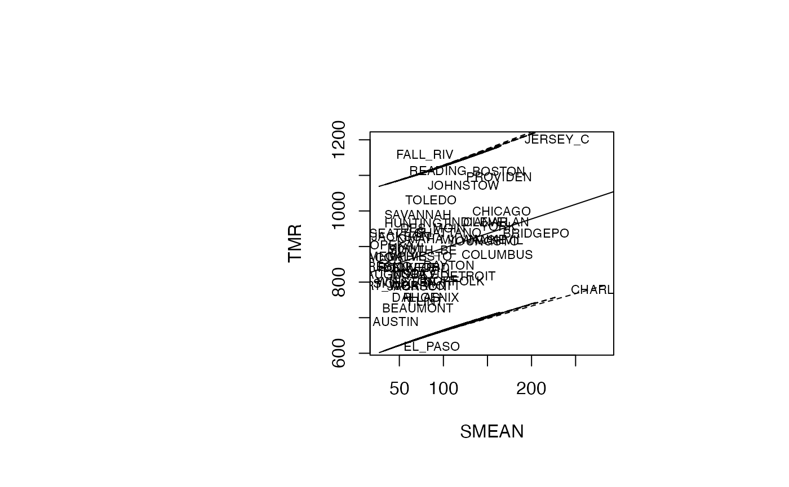
Analyse du modèle TMR vs NONPOOR
IC_95 <- predict(reg_TMR_NONPOOR, interval="confidence")
IC_95 <- data.frame(IC_95)
binf_IC_95 <- IC_95$lwr
bsup_IC_95 <- IC_95$upr
result_TMR_NONPOOR <- data.frame(air_pollution,binf_IC_95,bsup_IC_95)
par(oma=c(0,12,1,5)+1,bg="white")
plot(air_pollution$NONPOOR, air_pollution$TMR, type = "p",xlab="NONPOOR",ylab="TMR")
abline(reg_TMR_NONPOOR)
matlines(result_TMR_NONPOOR$NONPOOR,IC_95[,2:3],lty=c(2,2),col="black")
IP_95 <- predict(reg_TMR_NONPOOR, interval="prediction")
#> Warning in predict.lm(reg_TMR_NONPOOR, interval = "prediction"): predictions on current data refer to _future_ responses
IP_95 <- data.frame(IP_95)
binf_IP_95 <- IP_95$lwr
bsup_IP_95 <- IP_95$upr
result_TMR_NONPOOR <- data.frame(result_TMR_NONPOOR,binf_IP_95,bsup_IP_95)
par(oma=c(0,12,1,5)+1,bg="white")
plot(air_pollution$NONPOOR, air_pollution$TMR, type = "n",xlab="NONPOOR",ylab="TMR")
text(air_pollution$NONPOOR, air_pollution$TMR, air_pollution$CITY,col='black',cex=0.7)
abline(reg_TMR_NONPOOR)
matlines(air_pollution$NONPOOR,IP_95[,2:3],lty=c(2,2),col="black")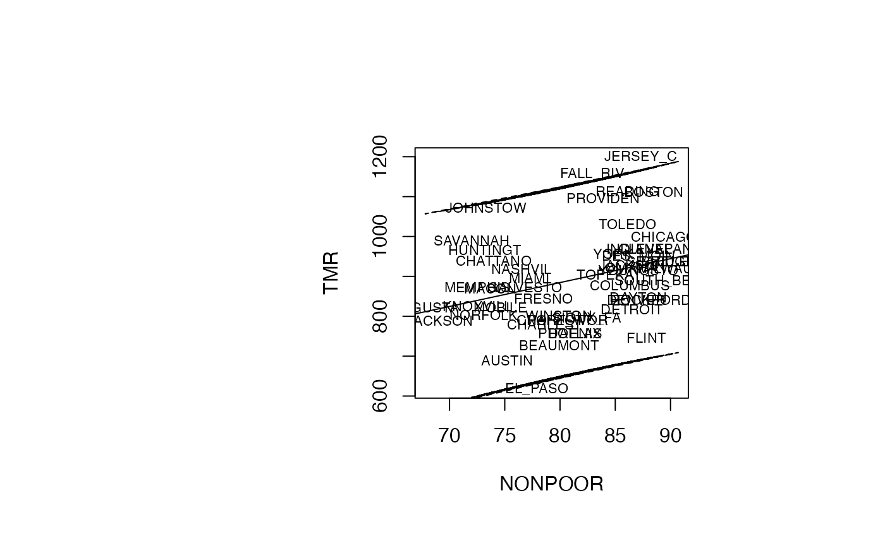
Analyse du modèle TMR vs PERWH
IC_95 <- predict(reg_TMR_PERWH, interval="confidence")
IC_95 <- data.frame(IC_95)
binf_IC_95 <- IC_95$lwr
bsup_IC_95 <- IC_95$upr
result_TMR_PERWH <- data.frame(air_pollution,binf_IC_95,bsup_IC_95)
par(oma=c(0,12,1,5)+1,bg="white")
plot(air_pollution$PERWH, air_pollution$TMR, type = "p",xlab="PERWH",ylab="TMR")
abline(reg_TMR_PERWH)
matlines(result_TMR_PERWH$PERWH,IC_95[,2:3],lty=c(2,2),col="black")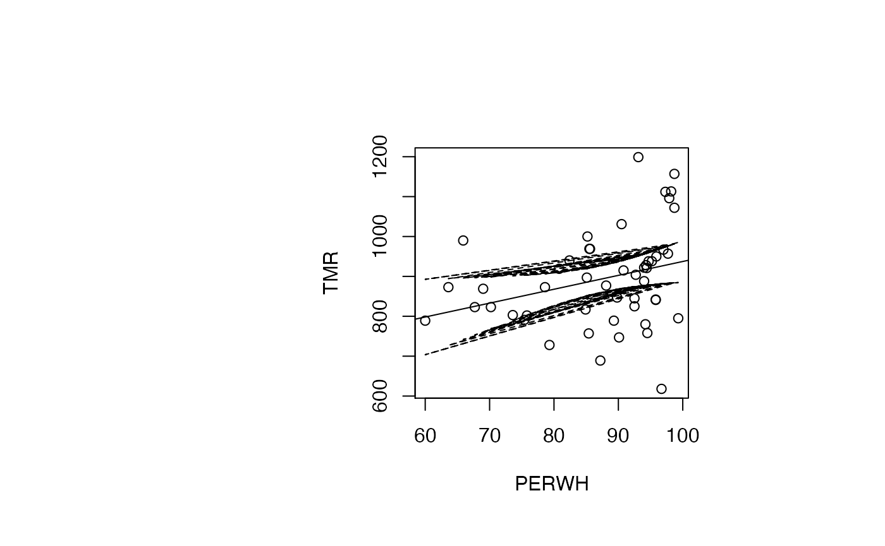
IP_95 <- predict(reg_TMR_PERWH, interval="prediction")
#> Warning in predict.lm(reg_TMR_PERWH, interval = "prediction"): predictions on current data refer to _future_ responses
IP_95 <- data.frame(IP_95)
binf_IP_95 <- IP_95$lwr
bsup_IP_95 <- IP_95$upr
result_TMR_PERWH <- data.frame(result_TMR_PERWH,binf_IP_95,bsup_IP_95)
par(oma=c(0,12,1,5)+1,bg="white")
plot(air_pollution$PERWH, air_pollution$TMR, type = "n",xlab="PERWH",ylab="TMR")
text(air_pollution$PERWH, air_pollution$TMR, air_pollution$CITY,col='black',cex=0.7)
abline(reg_TMR_PERWH)
matlines(air_pollution$PERWH,IP_95[,2:3],lty=c(2,2),col="black")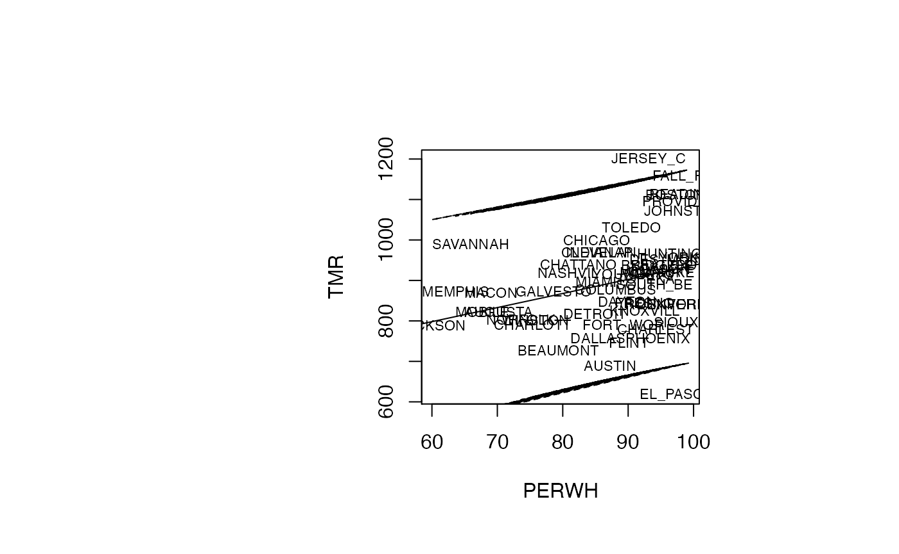
Exercice 10.5 : Régression multiple
reg_TMR_all <- lm(TMR~SMIN+SMEAN+SMAX+PMIN+PMEAN+PERWH+NONPOOR+GE65+LPOP+l_pm2+l_pmax,data=air_pollution)
summary(reg_TMR_all)
#>
#> Call:
#> lm(formula = TMR ~ SMIN + SMEAN + SMAX + PMIN + PMEAN + PERWH +
#> NONPOOR + GE65 + LPOP + l_pm2 + l_pmax, data = air_pollution)
#>
#> Residuals:
#> Min 1Q Median 3Q Max
#> -123.570 -23.858 4.477 32.310 104.264
#>
#> Coefficients:
#> Estimate Std. Error t value Pr(>|t|)
#> (Intercept) 601.67911 243.89675 2.467 0.0182 *
#> SMIN 0.39119 0.36334 1.077 0.2884
#> SMEAN -0.21686 0.45596 -0.476 0.6371
#> SMAX 0.07739 0.14112 0.548 0.5866
#> PMIN 1.10963 0.76616 1.448 0.1557
#> PMEAN -0.40629 0.58083 -0.699 0.4885
#> PERWH -3.13718 1.41835 -2.212 0.0331 *
#> NONPOOR -3.21879 2.08732 -1.542 0.1313
#> GE65 7.15451 0.67558 10.590 6.77e-13 ***
#> LPOP -24.30248 27.95434 -0.869 0.3901
#> l_pm2 36.78162 16.01267 2.297 0.0272 *
#> l_pmax 41.24149 36.44439 1.132 0.2649
#> ---
#> Signif. codes: 0 '***' 0.001 '**' 0.01 '*' 0.05 '.' 0.1 ' ' 1
#>
#> Residual standard error: 53.91 on 38 degrees of freedom
#> Multiple R-squared: 0.845, Adjusted R-squared: 0.8001
#> F-statistic: 18.83 on 11 and 38 DF, p-value: 3.998e-12Exercice 10.6 : Régression simplifié
reg_TMR_simplifie <- lm(TMR~PERWH+GE65+l_pm2,data=air_pollution)
summary(reg_TMR_simplifie)
#>
#> Call:
#> lm(formula = TMR ~ PERWH + GE65 + l_pm2, data = air_pollution)
#>
#> Residuals:
#> Min 1Q Median 3Q Max
#> -146.219 -29.145 3.364 29.679 126.272
#>
#> Coefficients:
#> Estimate Std. Error t value Pr(>|t|)
#> (Intercept) 560.0295 77.3237 7.243 3.95e-09 ***
#> PERWH -3.8830 1.0515 -3.693 0.000587 ***
#> GE65 6.8760 0.6657 10.329 1.44e-13 ***
#> l_pm2 30.0058 8.6584 3.466 0.001157 **
#> ---
#> Signif. codes: 0 '***' 0.001 '**' 0.01 '*' 0.05 '.' 0.1 ' ' 1
#>
#> Residual standard error: 55.94 on 46 degrees of freedom
#> Multiple R-squared: 0.798, Adjusted R-squared: 0.7848
#> F-statistic: 60.56 on 3 and 46 DF, p-value: 5.232e-16Exercice 10.7 : Régression multiple par sélection de variables
Définir la graine aléatoire pour pouvoir reproduire les simulations
set.seed(123)Mise en place de la validation croisée \(k\)-fold
train.control <- caret::trainControl(method = "cv", number = 10)Sélection ascendante
step.model <- caret::train(TMR~SMIN+SMEAN+SMAX+PMIN+PMEAN+PERWH+NONPOOR+GE65+LPOP+l_pm2+l_pmax,data=air_pollution,method = "leapForward", tuneGrid = data.frame(nvmax = 1:5), trControl = train.control)
step.model$results
#> nvmax RMSE Rsquared MAE RMSESD RsquaredSD MAESD
#> 1 1 69.18548 0.6759393 56.67012 21.96414 0.18841443 16.08476
#> 2 2 65.10777 0.7115294 47.56491 20.32729 0.13930059 14.28262
#> 3 3 59.58531 0.7737680 47.64129 13.08864 0.09672402 11.05144
#> 4 4 63.39414 0.7345135 51.43794 15.85645 0.14911173 15.58864
#> 5 5 59.80585 0.7610921 48.97589 17.25668 0.15858671 13.81363
step.model$bestTune
#> nvmax
#> 3 3
summary(step.model$finalModel)
#> Subset selection object
#> 11 Variables (and intercept)
#> Forced in Forced out
#> SMIN FALSE FALSE
#> SMEAN FALSE FALSE
#> SMAX FALSE FALSE
#> PMIN FALSE FALSE
#> PMEAN FALSE FALSE
#> PERWH FALSE FALSE
#> NONPOOR FALSE FALSE
#> GE65 FALSE FALSE
#> LPOP FALSE FALSE
#> l_pm2 FALSE FALSE
#> l_pmax FALSE FALSE
#> 1 subsets of each size up to 3
#> Selection Algorithm: forward
#> SMIN SMEAN SMAX PMIN PMEAN PERWH NONPOOR GE65 LPOP l_pm2 l_pmax
#> 1 ( 1 ) " " " " " " " " " " " " " " "*" " " " " " "
#> 2 ( 1 ) " " " " " " " " " " "*" " " "*" " " " " " "
#> 3 ( 1 ) " " " " " " " " " " "*" " " "*" " " "*" " "
reg_TMR_forward <- lm(TMR~PERWH+GE65+l_pm2,data=air_pollution)
summary(reg_TMR_forward)
#>
#> Call:
#> lm(formula = TMR ~ PERWH + GE65 + l_pm2, data = air_pollution)
#>
#> Residuals:
#> Min 1Q Median 3Q Max
#> -146.219 -29.145 3.364 29.679 126.272
#>
#> Coefficients:
#> Estimate Std. Error t value Pr(>|t|)
#> (Intercept) 560.0295 77.3237 7.243 3.95e-09 ***
#> PERWH -3.8830 1.0515 -3.693 0.000587 ***
#> GE65 6.8760 0.6657 10.329 1.44e-13 ***
#> l_pm2 30.0058 8.6584 3.466 0.001157 **
#> ---
#> Signif. codes: 0 '***' 0.001 '**' 0.01 '*' 0.05 '.' 0.1 ' ' 1
#>
#> Residual standard error: 55.94 on 46 degrees of freedom
#> Multiple R-squared: 0.798, Adjusted R-squared: 0.7848
#> F-statistic: 60.56 on 3 and 46 DF, p-value: 5.232e-16Sélection descendante
step.model <- caret::train(TMR~SMIN+SMEAN+SMAX+PMIN+PMEAN+PERWH+NONPOOR+GE65+LPOP+l_pm2+l_pmax,data=air_pollution, method = "leapBackward", tuneGrid = data.frame(nvmax = 1:5), trControl = train.control)
step.model$results
#> nvmax RMSE Rsquared MAE RMSESD RsquaredSD MAESD
#> 1 1 70.09854 0.6630928 58.32681 26.56512 0.3333468 18.82932
#> 2 2 70.79554 0.6879672 59.56725 33.02547 0.3136828 29.16886
#> 3 3 60.04721 0.7486923 50.28272 28.11412 0.2589395 24.67720
#> 4 4 63.88906 0.7018427 53.05051 25.87602 0.3000792 22.71978
#> 5 5 66.69164 0.6917069 53.66172 22.19340 0.2961117 21.90087
step.model$bestTune
#> nvmax
#> 3 3
summary(step.model$finalModel)
#> Subset selection object
#> 11 Variables (and intercept)
#> Forced in Forced out
#> SMIN FALSE FALSE
#> SMEAN FALSE FALSE
#> SMAX FALSE FALSE
#> PMIN FALSE FALSE
#> PMEAN FALSE FALSE
#> PERWH FALSE FALSE
#> NONPOOR FALSE FALSE
#> GE65 FALSE FALSE
#> LPOP FALSE FALSE
#> l_pm2 FALSE FALSE
#> l_pmax FALSE FALSE
#> 1 subsets of each size up to 3
#> Selection Algorithm: backward
#> SMIN SMEAN SMAX PMIN PMEAN PERWH NONPOOR GE65 LPOP l_pm2 l_pmax
#> 1 ( 1 ) " " " " " " " " " " " " " " "*" " " " " " "
#> 2 ( 1 ) " " " " " " " " " " " " " " "*" " " "*" " "
#> 3 ( 1 ) " " " " " " " " " " " " "*" "*" " " "*" " "
reg_TMR_backward <- lm(TMR~NONPOOR+GE65+l_pm2,data=air_pollution)
summary(reg_TMR_backward)
#>
#> Call:
#> lm(formula = TMR ~ NONPOOR + GE65 + l_pm2, data = air_pollution)
#>
#> Residuals:
#> Min 1Q Median 3Q Max
#> -170.356 -28.518 3.817 30.665 142.149
#>
#> Coefficients:
#> Estimate Std. Error t value Pr(>|t|)
#> (Intercept) 685.4547 105.3949 6.504 5.07e-08 ***
#> NONPOOR -5.9609 1.5899 -3.749 0.000494 ***
#> GE65 6.1259 0.5447 11.246 8.55e-15 ***
#> l_pm2 51.5150 9.1878 5.607 1.12e-06 ***
#> ---
#> Signif. codes: 0 '***' 0.001 '**' 0.01 '*' 0.05 '.' 0.1 ' ' 1
#>
#> Residual standard error: 55.74 on 46 degrees of freedom
#> Multiple R-squared: 0.7994, Adjusted R-squared: 0.7863
#> F-statistic: 61.09 on 3 and 46 DF, p-value: 4.455e-16Sélection pas à pas
step.model <- caret::train(TMR~SMIN+SMEAN+SMAX+PMIN+PMEAN+PERWH+NONPOOR+GE65+LPOP+l_pm2+l_pmax,data=air_pollution, method = "leapSeq",tuneGrid = data.frame(nvmax = 1:5), trControl = train.control)
step.model$results
#> nvmax RMSE Rsquared MAE RMSESD RsquaredSD MAESD
#> 1 1 65.32693 0.7683791 55.80282 29.65039 0.2515142 24.60868
#> 2 2 68.55816 0.7503571 53.88524 21.35529 0.2029516 16.01007
#> 3 3 63.78007 0.7537507 50.13378 21.31510 0.1752168 17.63727
#> 4 4 68.42619 0.7092096 58.30839 32.09439 0.2530411 31.49394
#> 5 5 85.12890 0.6197462 68.70314 36.71849 0.2816074 25.49105
step.model$bestTune
#> nvmax
#> 3 3
summary(step.model$finalModel)
#> Subset selection object
#> 11 Variables (and intercept)
#> Forced in Forced out
#> SMIN FALSE FALSE
#> SMEAN FALSE FALSE
#> SMAX FALSE FALSE
#> PMIN FALSE FALSE
#> PMEAN FALSE FALSE
#> PERWH FALSE FALSE
#> NONPOOR FALSE FALSE
#> GE65 FALSE FALSE
#> LPOP FALSE FALSE
#> l_pm2 FALSE FALSE
#> l_pmax FALSE FALSE
#> 1 subsets of each size up to 3
#> Selection Algorithm: 'sequential replacement'
#> SMIN SMEAN SMAX PMIN PMEAN PERWH NONPOOR GE65 LPOP l_pm2 l_pmax
#> 1 ( 1 ) " " " " " " " " " " " " " " "*" " " " " " "
#> 2 ( 1 ) " " " " " " " " " " "*" " " "*" " " " " " "
#> 3 ( 1 ) " " " " " " " " " " " " "*" "*" " " "*" " "
reg_TMR_step_by_step <- lm(TMR~NONPOOR+GE65+l_pm2,data=air_pollution)
summary(reg_TMR_step_by_step)
#>
#> Call:
#> lm(formula = TMR ~ NONPOOR + GE65 + l_pm2, data = air_pollution)
#>
#> Residuals:
#> Min 1Q Median 3Q Max
#> -170.356 -28.518 3.817 30.665 142.149
#>
#> Coefficients:
#> Estimate Std. Error t value Pr(>|t|)
#> (Intercept) 685.4547 105.3949 6.504 5.07e-08 ***
#> NONPOOR -5.9609 1.5899 -3.749 0.000494 ***
#> GE65 6.1259 0.5447 11.246 8.55e-15 ***
#> l_pm2 51.5150 9.1878 5.607 1.12e-06 ***
#> ---
#> Signif. codes: 0 '***' 0.001 '**' 0.01 '*' 0.05 '.' 0.1 ' ' 1
#>
#> Residual standard error: 55.74 on 46 degrees of freedom
#> Multiple R-squared: 0.7994, Adjusted R-squared: 0.7863
#> F-statistic: 61.09 on 3 and 46 DF, p-value: 4.455e-16Exercice 10.8 : Analyse des résidus et des observations
reg_TMR_sel <- lm(TMR~PERWH+GE65+l_pm2,data=air_pollution)
summary(reg_TMR_sel)
#>
#> Call:
#> lm(formula = TMR ~ PERWH + GE65 + l_pm2, data = air_pollution)
#>
#> Residuals:
#> Min 1Q Median 3Q Max
#> -146.219 -29.145 3.364 29.679 126.272
#>
#> Coefficients:
#> Estimate Std. Error t value Pr(>|t|)
#> (Intercept) 560.0295 77.3237 7.243 3.95e-09 ***
#> PERWH -3.8830 1.0515 -3.693 0.000587 ***
#> GE65 6.8760 0.6657 10.329 1.44e-13 ***
#> l_pm2 30.0058 8.6584 3.466 0.001157 **
#> ---
#> Signif. codes: 0 '***' 0.001 '**' 0.01 '*' 0.05 '.' 0.1 ' ' 1
#>
#> Residual standard error: 55.94 on 46 degrees of freedom
#> Multiple R-squared: 0.798, Adjusted R-squared: 0.7848
#> F-statistic: 60.56 on 3 and 46 DF, p-value: 5.232e-16
resid <- reg_TMR_sel$residuals
pred <- fitted(reg_TMR_sel)
rmse <- sqrt(49*var(resid)/46)
resid_std <- resid/rmse
par(oma=c(0,12,1,5)+1,bg="white")
plot(pred, resid_std, type = "n",xlab="TMR prédit",ylab="Résidus standardisés",main="Comportement des résidus standardisés")
text(pred, resid_std, air_pollution$CITY,col='black',cex=0.7)
abline(h=c(-2,0,2))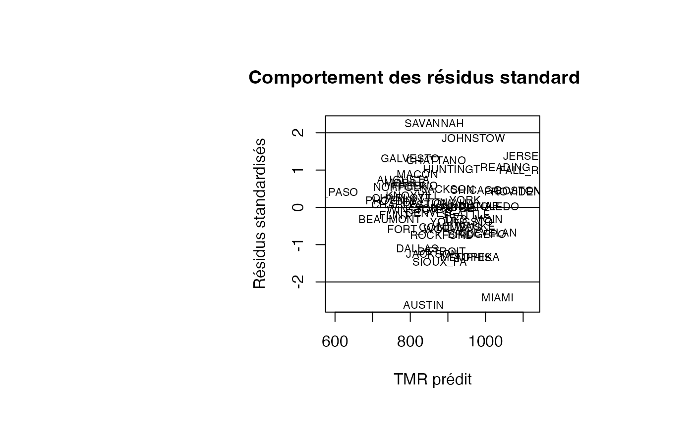
rstudent_leverage <- olsrr::ols_prep_rstudlev_data(reg_TMR_sel)
rstudent <- rstudent_leverage$levrstud$rstudent
result_TMR_sel <- data.frame(air_pollution,rstudent)
par(oma=c(0,12,1,5)+1,bg="white")
plot(pred, result_TMR_sel$rstudent, type = "n",xlab="TMR prédit",ylab="RStudents")
text(pred, result_TMR_sel$rstudent, result_TMR_sel$CITY,col='black',cex=0.7)
abline(h=c(-2.01,0,2.01))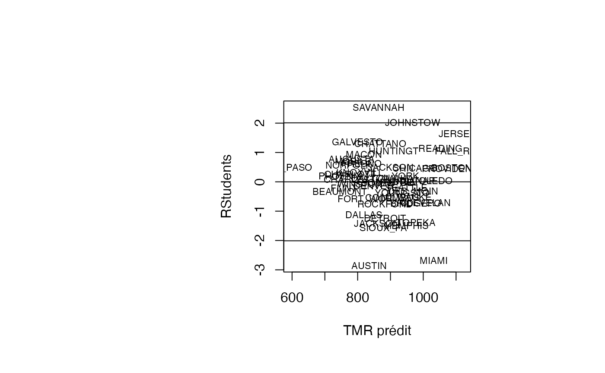
leverage <- rstudent_leverage$levrstud$leverage
result_TMR_sel <- data.frame(result_TMR_sel,leverage)
par(oma=c(0,12,1,5)+1,bg="white")
plot(pred, result_TMR_sel$leverage, type = "n",xlab="TMR prédit",ylab="Leviers")
text(pred, result_TMR_sel$leverage, result_TMR_sel$CITY,col='black',cex=0.7)
abline(h=0.16)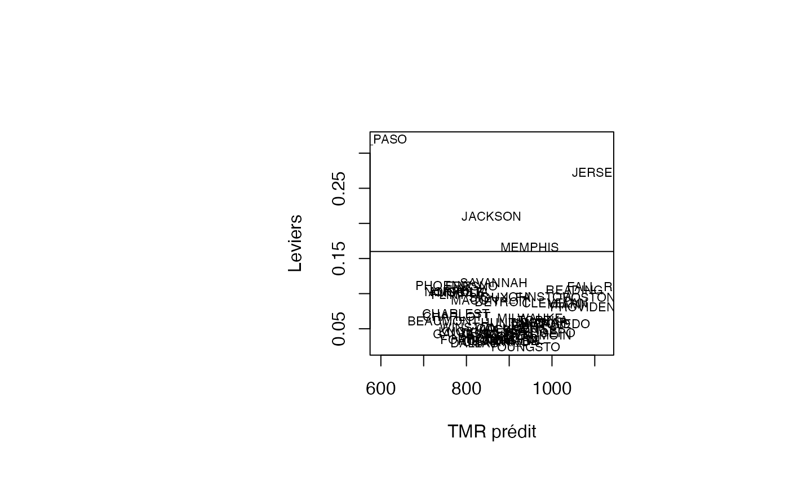
cookd <- matrix(0,nrow=50)
for (i in 1:50)
{cookd[i]=(leverage[i]/(1-leverage[i]))*(resid_std[i]^2/(2*(1-leverage[i])))}
result_TMR_sel <- data.frame(result_TMR_sel,cookd)
par(oma=c(0,12,1,5)+1,bg="white")
plot(pred, result_TMR_sel$cookd, type = "n",xlab="TMR prédit",ylab="D de Cook")
text(pred, result_TMR_sel$cookd, result_TMR_sel$CITY,col='black',cex=0.7)
abline(h=0.0870)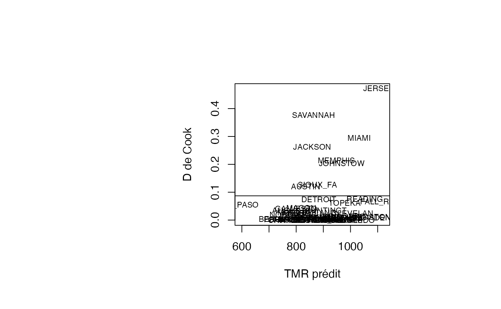
num_ville <- 1:50
dfb <- dfbetas(reg_TMR_sel)
dfbetas <- data.frame(dfb)
dfbetas_GE65 <- dfbetas$GE65
result_TMR_sel <- data.frame(result_TMR_sel,dfbetas_GE65)
dfbetas_l_pm2 <- dfbetas$l_pm2
result_TMR_sel <- data.frame(result_TMR_sel,dfbetas_l_pm2)
dfbetas_PERWH <- dfbetas$PERWH
result_TMR_sel <- data.frame(result_TMR_sel,dfbetas_PERWH)
par(oma=c(0,12,1,5)+1,bg="white")
plot(pred, result_TMR_sel$dfbetas_GE65, type = "n",xlab="TMR prédit",ylab="DFBetas pour GE65")
text(pred, result_TMR_sel$dfbetas_GE65, result_TMR_sel$CITY,col='black',cex=0.7)
abline(h=0.2828)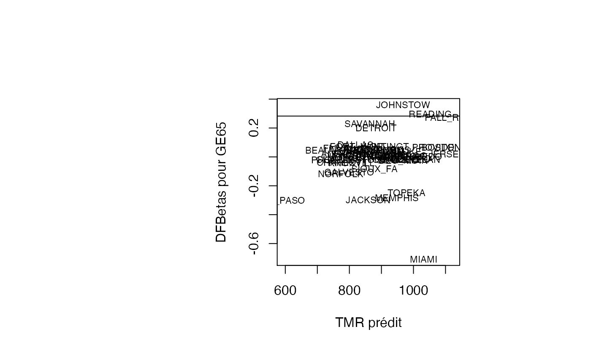
plot(pred, result_TMR_sel$dfbetas_l_pm2, type = "n",xlab="TMR prédit",ylab="DFBetas pour l_pm2")
text(pred, result_TMR_sel$dfbetas_l_pm2, result_TMR_sel$CITY,col='black',cex=0.7)
abline(h=0.2828)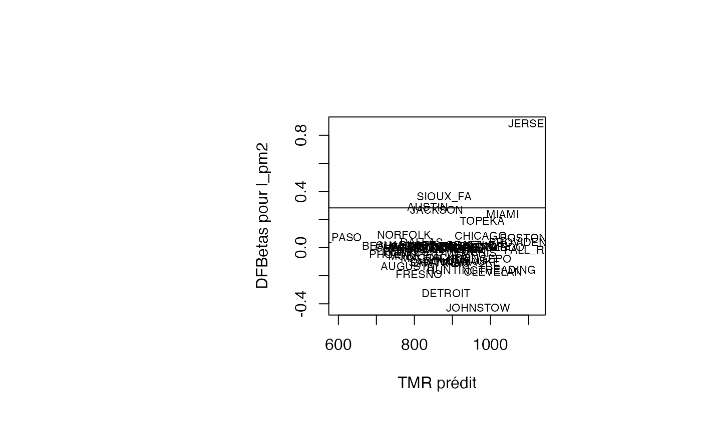
plot(pred, result_TMR_sel$dfbetas_PERWH, type = "n",xlab="TMR prédit",ylab="DFBetas pour PERWH")
text(pred, result_TMR_sel$dfbetas_PERWH, result_TMR_sel$CITY,col='black',cex=0.7)
abline(h=0.2828)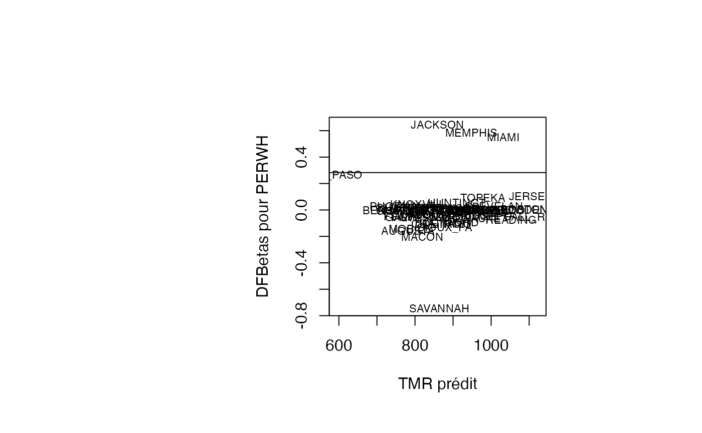
Exercice 10.9 : Intervalles de confiance et de prévision
IC_95 <- predict(reg_TMR_sel, interval="confidence")
IC_95 <- data.frame(IC_95)
binf_IC_95 <- IC_95$lwr
bsup_IC_95 <- IC_95$upr
result_TMR_sel <- data.frame(air_pollution,binf_IC_95,bsup_IC_95)
par(oma=c(0,12,1,5)+1,bg="white")
lattice::xyplot(pred+binf_IC_95+bsup_IC_95~num_ville,type=c("p","l"),lty=1,cex=2,lwd=2,col=c("red","green","green"),xlab="",ylab="TMR")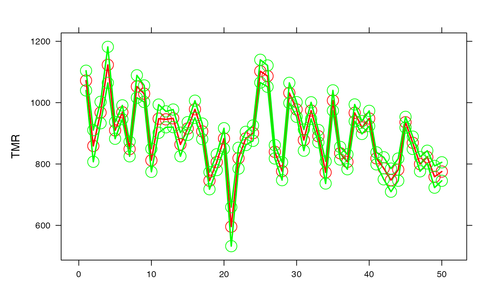
IP_95 <- predict(reg_TMR_sel, interval="prediction")
#> Warning in predict.lm(reg_TMR_sel, interval = "prediction"): predictions on current data refer to _future_ responses
IP_95 <- data.frame(IP_95)
binf_IP_95 <- IP_95$lwr
bsup_IP_95 <- IP_95$upr
result_TMR_sel <- data.frame(result_TMR_sel,binf_IP_95,bsup_IP_95)
par(oma=c(0,12,1,5)+1,bg="white")
lattice::xyplot(air_pollution$TMR+pred+binf_IP_95+bsup_IP_95~num_ville,type=c("p","l"),lty=1,cex=2,lwd=2,col=c("blue","red","green","green"),xlab="",ylab="TMR")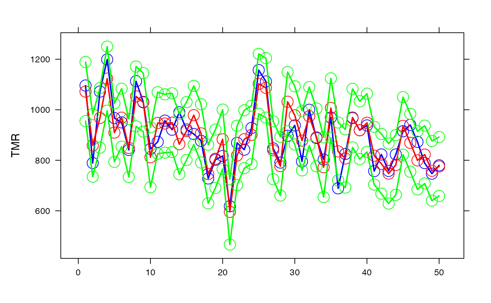
Exercice 10.10 : Multicolinéarité
Modèle avec GE65, l_pm2 et
PERWH
GE65 <- air_pollution$GE65
l_pm2 <- air_pollution$l_pm2
PERWH <- air_pollution$PERWH
predicteurs_sel <- data.frame(GE65,l_pm2,PERWH)
GGally::ggpairs(predicteurs_sel)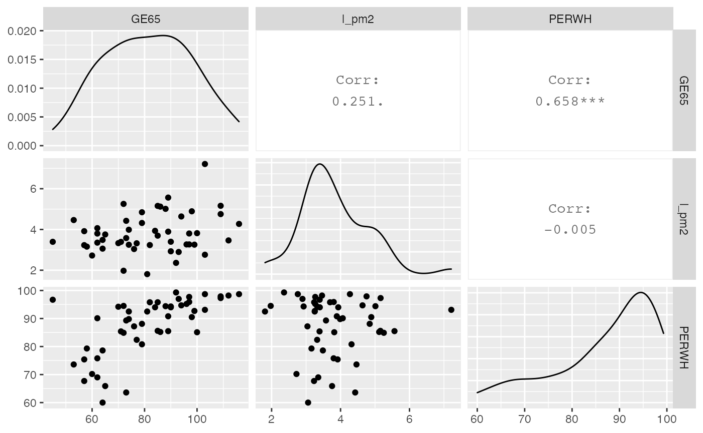
Modèle avec GE65, l_pm2 et
NONPOOR
NONPOOR <- air_pollution$NONPOOR
predicteurs_sel <- data.frame(GE65,l_pm2,NONPOOR)
GGally::ggpairs(predicteurs_sel)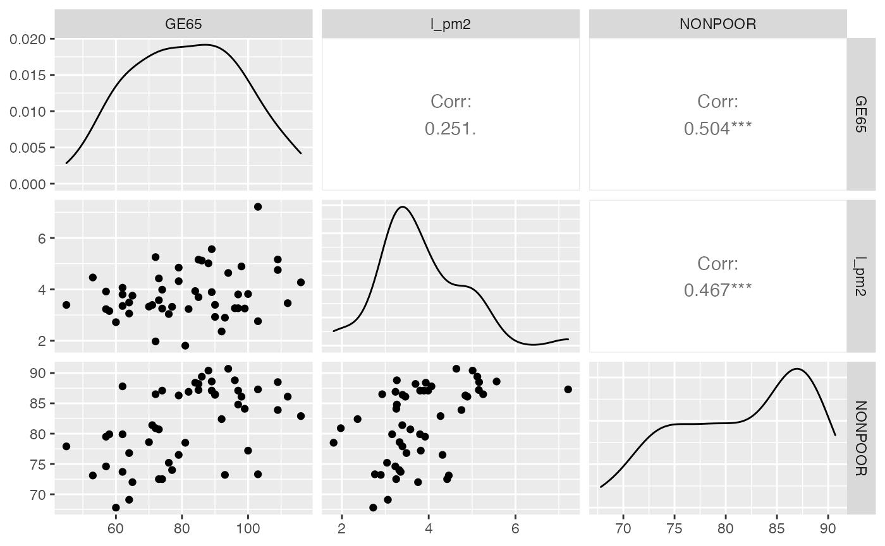
Description des données : Consommation d’électricité
Consommation d’électricité journalière en France de l’année 2003
- Date : date
- conso : consommation d’électricité en MWH
- t : numéro du jour
- nom_jour : nom du jour de la semaine
- mois : nom du mois
- temp : température en degrés Celsius
- ejp : statut du jour EDF (spécial = 1 ; non spécial = 0)
- ferie : statut du jour annuel (férié ou non)
Lecture des données
data(conso_temp)Exercice 10.12 : Analyse descriptive
plot(conso_temp$temp, conso_temp$conso, xlab="Température",ylab="Consommation d'électricité")
plot(conso_temp$t, conso_temp$conso, type="l",xlab="Temps",ylab="Consommation d'électricité")Exercice 10.13 : Plusieurs petits modèles
res.lm_conso_temp <- lm('conso~temp',data=conso_temp)
summary(res.lm_conso_temp)
#>
#> Call:
#> lm(formula = "conso~temp", data = conso_temp)
#>
#> Residuals:
#> Min 1Q Median 3Q Max
#> -692370 -148563 14133 181002 457884
#>
#> Coefficients:
#> Estimate Std. Error t value Pr(>|t|)
#> (Intercept) 3096889 25829 119.90 <2e-16 ***
#> temp -46896 1741 -26.93 <2e-16 ***
#> ---
#> Signif. codes: 0 '***' 0.001 '**' 0.01 '*' 0.05 '.' 0.1 ' ' 1
#>
#> Residual standard error: 238800 on 363 degrees of freedom
#> Multiple R-squared: 0.6665, Adjusted R-squared: 0.6656
#> F-statistic: 725.4 on 1 and 363 DF, p-value: < 2.2e-16
res.lm_conso_nom_jour <- lm('conso~nom_jour',data=conso_temp)
summary(res.lm_conso_nom_jour)
#>
#> Call:
#> lm(formula = "conso~nom_jour", data = conso_temp)
#>
#> Residuals:
#> Min 1Q Median 3Q Max
#> -770678 -288794 -170887 334431 1004436
#>
#> Coefficients:
#> Estimate Std. Error t value Pr(>|t|)
#> (Intercept) 2165591 53080 40.799 < 2e-16 ***
#> nom_jourJeudi 429619 75066 5.723 2.21e-08 ***
#> nom_jourLundi 359886 75066 4.794 2.40e-06 ***
#> nom_jourMardi 442490 75066 5.895 8.68e-09 ***
#> nom_jourMercredi 454991 74711 6.090 2.91e-09 ***
#> nom_jourSamedi 155504 75066 2.072 0.039 *
#> nom_jourVendredi 412957 75066 5.501 7.19e-08 ***
#> ---
#> Signif. codes: 0 '***' 0.001 '**' 0.01 '*' 0.05 '.' 0.1 ' ' 1
#>
#> Residual standard error: 382800 on 358 degrees of freedom
#> Multiple R-squared: 0.1552, Adjusted R-squared: 0.141
#> F-statistic: 10.96 on 6 and 358 DF, p-value: 3.257e-11
res.lm_conso_mois <- lm('conso~mois',data=conso_temp)
summary(res.lm_conso_mois)
#>
#> Call:
#> lm(formula = "conso~mois", data = conso_temp)
#>
#> Residuals:
#> Min 1Q Median 3Q Max
#> -903710 -171027 46853 158783 511053
#>
#> Coefficients:
#> Estimate Std. Error t value Pr(>|t|)
#> (Intercept) 2032302 42394 47.938 < 2e-16 ***
#> moisAvril 392288 60452 6.489 2.92e-10 ***
#> moisDécembre 963815 59954 16.076 < 2e-16 ***
#> moisFévrier 954286 61539 15.507 < 2e-16 ***
#> moisJanvier 955814 59954 15.942 < 2e-16 ***
#> moisJuillet 183273 59954 3.057 0.00241 **
#> moisJuin 153228 60452 2.535 0.01169 *
#> moisMai 111377 59954 1.858 0.06404 .
#> moisMars 420908 59954 7.020 1.14e-11 ***
#> moisNovembre 701163 60452 11.599 < 2e-16 ***
#> moisOctobre 502472 59954 8.381 1.26e-15 ***
#> moisSeptembre 166700 60452 2.758 0.00613 **
#> ---
#> Signif. codes: 0 '***' 0.001 '**' 0.01 '*' 0.05 '.' 0.1 ' ' 1
#>
#> Residual standard error: 236000 on 353 degrees of freedom
#> Multiple R-squared: 0.6832, Adjusted R-squared: 0.6733
#> F-statistic: 69.21 on 11 and 353 DF, p-value: < 2.2e-16
res.lm_conso_ejp <- lm('conso~ejp',data=conso_temp)
summary(res.lm_conso_ejp)
#>
#> Call:
#> lm(formula = "conso~ejp", data = conso_temp)
#>
#> Residuals:
#> Min 1Q Median 3Q Max
#> -728827 -234856 -73797 274354 947544
#>
#> Coefficients:
#> Estimate Std. Error t value Pr(>|t|)
#> (Intercept) 2441670 20398 119.701 <2e-16 ***
#> ejp 678776 77941 8.709 <2e-16 ***
#> ---
#> Signif. codes: 0 '***' 0.001 '**' 0.01 '*' 0.05 '.' 0.1 ' ' 1
#>
#> Residual standard error: 376100 on 363 degrees of freedom
#> Multiple R-squared: 0.1728, Adjusted R-squared: 0.1705
#> F-statistic: 75.84 on 1 and 363 DF, p-value: < 2.2e-16
res.lm_conso_ferie <- lm('conso~ferie',data=conso_temp)
summary(res.lm_conso_ferie)
#>
#> Call:
#> lm(formula = "conso~ferie", data = conso_temp)
#>
#> Residuals:
#> Min 1Q Median 3Q Max
#> -788625 -257112 -113856 321808 970137
#>
#> Coefficients:
#> Estimate Std. Error t value Pr(>|t|)
#> (Intercept) 2501468 21609 115.762 < 2e-16 ***
#> ferieoui -441526 124474 -3.547 0.000441 ***
#> ---
#> Signif. codes: 0 '***' 0.001 '**' 0.01 '*' 0.05 '.' 0.1 ' ' 1
#>
#> Residual standard error: 406600 on 363 degrees of freedom
#> Multiple R-squared: 0.0335, Adjusted R-squared: 0.03084
#> F-statistic: 12.58 on 1 and 363 DF, p-value: 0.0004405Exercice 10.14 : Modèle complet
Modèle complet
res.lm_conso_all <- lm('conso~temp+nom_jour+mois+ejp+ferie',data=conso_temp)
summary(res.lm_conso_all)
#>
#> Call:
#> lm(formula = "conso~temp+nom_jour+mois+ejp+ferie", data = conso_temp)
#>
#> Residuals:
#> Min 1Q Median 3Q Max
#> -451348 -63336 -503 65596 277071
#>
#> Coefficients:
#> Estimate Std. Error t value Pr(>|t|)
#> (Intercept) 2598970 55304 46.994 < 2e-16 ***
#> temp -36387 2108 -17.260 < 2e-16 ***
#> nom_jourJeudi 448914 21979 20.425 < 2e-16 ***
#> nom_jourLundi 375634 22036 17.047 < 2e-16 ***
#> nom_jourMardi 434728 21831 19.913 < 2e-16 ***
#> nom_jourMercredi 436470 21719 20.096 < 2e-16 ***
#> nom_jourSamedi 162655 21710 7.492 5.77e-13 ***
#> nom_jourVendredi 407251 22009 18.504 < 2e-16 ***
#> moisAvril -56350 37699 -1.495 0.135906
#> moisDécembre 287132 46564 6.166 1.96e-09 ***
#> moisFévrier 206940 49032 4.221 3.12e-05 ***
#> moisJanvier 192104 49439 3.886 0.000122 ***
#> moisJuillet 74649 28546 2.615 0.009315 **
#> moisJuin 66417 28755 2.310 0.021493 *
#> moisMai -182620 33408 -5.466 8.84e-08 ***
#> moisMars -90910 39555 -2.298 0.022143 *
#> moisNovembre 196805 41513 4.741 3.12e-06 ***
#> moisOctobre -2434 39040 -0.062 0.950330
#> moisSeptembre -105467 31583 -3.339 0.000932 ***
#> ejp 37347 27235 1.371 0.171173
#> ferieoui -426169 34816 -12.241 < 2e-16 ***
#> ---
#> Signif. codes: 0 '***' 0.001 '**' 0.01 '*' 0.05 '.' 0.1 ' ' 1
#>
#> Residual standard error: 110600 on 344 degrees of freedom
#> Multiple R-squared: 0.9322, Adjusted R-squared: 0.9283
#> F-statistic: 236.5 on 20 and 344 DF, p-value: < 2.2e-16
SCT <- sum((conso_temp$conso-mean(conso_temp$conso))^2)
resid <- res.lm_conso_all$residuals
SCR_all <- 364*var(resid)
SCE_all <- SCT-SCR_allCalcul de l’apport de chaque variable du modèle à l’aide du \(F\) partiel
variable <- matrix(0,nrow=5)
f_partiel <- matrix(0,nrow=5)
p_value <- matrix(0,nrow=5)
nu_1 <- matrix(0,nrow=5)
nu_2 <- matrix(0,nrow=5)Modèle sans temp
res.lm_conso_all_temp <- lm('conso~nom_jour+mois+ejp+ferie',data=conso_temp)
summary(res.lm_conso_all_temp)
#>
#> Call:
#> lm(formula = "conso~nom_jour+mois+ejp+ferie", data = conso_temp)
#>
#> Residuals:
#> Min 1Q Median 3Q Max
#> -702695 -86287 7982 64969 549209
#>
#> Coefficients:
#> Estimate Std. Error t value Pr(>|t|)
#> (Intercept) 1741637 33169 52.508 < 2e-16 ***
#> nom_jourJeudi 445230 29979 14.852 < 2e-16 ***
#> nom_jourLundi 360841 30035 12.014 < 2e-16 ***
#> nom_jourMardi 432122 29778 14.512 < 2e-16 ***
#> nom_jourMercredi 429988 29621 14.516 < 2e-16 ***
#> nom_jourSamedi 164855 29613 5.567 5.21e-08 ***
#> nom_jourVendredi 395312 30006 13.174 < 2e-16 ***
#> moisAvril 372535 38672 9.633 < 2e-16 ***
#> moisDécembre 926320 38502 24.059 < 2e-16 ***
#> moisFévrier 879036 40644 21.628 < 2e-16 ***
#> moisJanvier 879180 39993 21.983 < 2e-16 ***
#> moisJuillet 159171 38361 4.149 4.20e-05 ***
#> moisJuin 150183 38660 3.885 0.000123 ***
#> moisMai 126884 38449 3.300 0.001068 **
#> moisMars 385598 38639 9.979 < 2e-16 ***
#> moisNovembre 720084 38682 18.615 < 2e-16 ***
#> moisOctobre 464623 38385 12.104 < 2e-16 ***
#> moisSeptembre 133819 38708 3.457 0.000614 ***
#> ejp 166527 35719 4.662 4.48e-06 ***
#> ferieoui -462962 47401 -9.767 < 2e-16 ***
#> ---
#> Signif. codes: 0 '***' 0.001 '**' 0.01 '*' 0.05 '.' 0.1 ' ' 1
#>
#> Residual standard error: 150900 on 345 degrees of freedom
#> Multiple R-squared: 0.8735, Adjusted R-squared: 0.8665
#> F-statistic: 125.4 on 19 and 345 DF, p-value: < 2.2e-16
resid <- res.lm_conso_all_temp$residuals
SCR_temp <-364*var(resid)
SCE_temp <- SCT-SCR_temp
f_temp=((SCE_all-SCE_temp)/(1))/(SCR_all/344)
p_val_temp = 1-pf(f_temp,1,344)
variable[1] <- "temp"
f_partiel[1] <- f_temp
p_value[1] <- p_val_temp
nu_1[1] <- 1
nu_2[1] <- 344Modèle sans nom_jour
res.lm_conso_all_nom_jour <- lm('conso~temp+mois+ejp+ferie',data=conso_temp)
summary(res.lm_conso_all_nom_jour)
#>
#> Call:
#> lm(formula = "conso~temp+mois+ejp+ferie", data = conso_temp)
#>
#> Residuals:
#> Min 1Q Median 3Q Max
#> -630398 -113728 35907 142429 363782
#>
#> Coefficients:
#> Estimate Std. Error t value Pr(>|t|)
#> (Intercept) 2865800 94502 30.325 < 2e-16 ***
#> temp -34648 3704 -9.355 < 2e-16 ***
#> moisAvril -15554 66250 -0.235 0.81452
#> moisDécembre 327835 81827 4.006 7.53e-05 ***
#> moisFévrier 220265 86242 2.554 0.01107 *
#> moisJanvier 209386 86960 2.408 0.01656 *
#> moisJuillet 102883 50178 2.050 0.04107 *
#> moisJuin 74196 50566 1.467 0.14319
#> moisMai -158730 58752 -2.702 0.00723 **
#> moisMars -82017 69554 -1.179 0.23912
#> moisNovembre 215735 73000 2.955 0.00334 **
#> moisOctobre 45864 68580 0.669 0.50408
#> moisSeptembre -72995 55491 -1.315 0.18923
#> ejp 163930 46797 3.503 0.00052 ***
#> ferieoui -344641 60567 -5.690 2.68e-08 ***
#> ---
#> Signif. codes: 0 '***' 0.001 '**' 0.01 '*' 0.05 '.' 0.1 ' ' 1
#>
#> Residual standard error: 194600 on 350 degrees of freedom
#> Multiple R-squared: 0.7864, Adjusted R-squared: 0.7779
#> F-statistic: 92.06 on 14 and 350 DF, p-value: < 2.2e-16
resid <- res.lm_conso_all_nom_jour$residuals
SCR_nom_jour <-364*var(resid)
SCE_nom_jour <- SCT-SCR_nom_jour
f_nom_jour=((SCE_all-SCE_nom_jour)/(6))/(SCR_all/344)
p_val_nom_jour = 1-pf(f_nom_jour,6,344)
variable[2] <- "nom_jour"
f_partiel[2] <- f_nom_jour
p_value[2] <- p_val_nom_jour
nu_1[2] <- 6
nu_2[2] <- 344Modèle sans mois
res.lm_conso_all_mois <- lm('conso~temp+nom_jour+ejp+ferie',data=conso_temp)
summary(res.lm_conso_all_mois)
#>
#> Call:
#> lm(formula = "conso~temp+nom_jour+ejp+ferie", data = conso_temp)
#>
#> Residuals:
#> Min 1Q Median 3Q Max
#> -409421 -130397 -2182 132234 366626
#>
#> Coefficients:
#> Estimate Std. Error t value Pr(>|t|)
#> (Intercept) 2762583 29064 95.052 < 2e-16 ***
#> temp -45087 1327 -33.970 < 2e-16 ***
#> nom_jourJeudi 441220 33115 13.324 < 2e-16 ***
#> nom_jourLundi 370313 33180 11.161 < 2e-16 ***
#> nom_jourMardi 429878 32877 13.076 < 2e-16 ***
#> nom_jourMercredi 434874 32713 13.293 < 2e-16 ***
#> nom_jourSamedi 156265 32753 4.771 2.68e-06 ***
#> nom_jourVendredi 397181 33141 11.984 < 2e-16 ***
#> ejp 65601 38437 1.707 0.0888 .
#> ferieoui -415458 51776 -8.024 1.51e-14 ***
#> ---
#> Signif. codes: 0 '***' 0.001 '**' 0.01 '*' 0.05 '.' 0.1 ' ' 1
#>
#> Residual standard error: 166900 on 355 degrees of freedom
#> Multiple R-squared: 0.8407, Adjusted R-squared: 0.8366
#> F-statistic: 208.1 on 9 and 355 DF, p-value: < 2.2e-16
resid <- res.lm_conso_all_mois$residuals
SCR_mois <-364*var(resid)
SCE_mois <- SCT-SCR_mois
f_mois=((SCE_all-SCE_mois)/(11))/(SCR_all/344)
p_val_mois = 1-pf(f_mois,11,344)
variable[3] <- "mois"
f_partiel[3] <- f_mois
p_value[3] <- p_val_mois
nu_1[3] <- 11
nu_2[3] <- 344Modèle sans ejp
res.lm_conso_all_ejp <- lm('conso~temp+nom_jour+mois+ferie',data=conso_temp)
summary(res.lm_conso_all_ejp)
#>
#> Call:
#> lm(formula = "conso~temp+nom_jour+mois+ferie", data = conso_temp)
#>
#> Residuals:
#> Min 1Q Median 3Q Max
#> -457304 -63748 -802 65726 268560
#>
#> Coefficients:
#> Estimate Std. Error t value Pr(>|t|)
#> (Intercept) 2615465 54049 48.391 < 2e-16 ***
#> temp -37181 2030 -18.320 < 2e-16 ***
#> nom_jourJeudi 451690 21913 20.613 < 2e-16 ***
#> nom_jourLundi 380006 21832 17.406 < 2e-16 ***
#> nom_jourMardi 437513 21764 20.103 < 2e-16 ***
#> nom_jourMercredi 439124 21660 20.274 < 2e-16 ***
#> nom_jourSamedi 162645 21738 7.482 6.13e-13 ***
#> nom_jourVendredi 412078 21753 18.943 < 2e-16 ***
#> moisAvril -65809 37110 -1.773 0.077054 .
#> moisDécembre 276367 45956 6.014 4.62e-09 ***
#> moisFévrier 201983 48961 4.125 4.64e-05 ***
#> moisJanvier 188074 49415 3.806 0.000167 ***
#> moisJuillet 72696 28547 2.547 0.011313 *
#> moisJuin 64533 28759 2.244 0.025470 *
#> moisMai -189332 33090 -5.722 2.29e-08 ***
#> moisMars -96908 39362 -2.462 0.014307 *
#> moisNovembre 185527 40742 4.554 7.32e-06 ***
#> moisOctobre -12864 38341 -0.336 0.737432
#> moisSeptembre -110907 31373 -3.535 0.000463 ***
#> ferieoui -427425 34848 -12.265 < 2e-16 ***
#> ---
#> Signif. codes: 0 '***' 0.001 '**' 0.01 '*' 0.05 '.' 0.1 ' ' 1
#>
#> Residual standard error: 110800 on 345 degrees of freedom
#> Multiple R-squared: 0.9318, Adjusted R-squared: 0.9281
#> F-statistic: 248.2 on 19 and 345 DF, p-value: < 2.2e-16
resid <- res.lm_conso_all_ejp$residuals
SCR_ejp <-364*var(resid)
SCE_ejp <- SCT-SCR_ejp
f_ejp=((SCE_all-SCE_ejp)/(1))/(SCR_all/344)
p_val_ejp = 1-pf(f_ejp,1,344)
variable[4] <- "ejp"
f_partiel[4] <- f_ejp
p_value[4] <- p_val_ejp
nu_1[4] <- 1
nu_2[4] <- 344Modèle sans ferie
res.lm_conso_all_ferie <- lm('conso~temp+nom_jour+mois+ejp',data=conso_temp)
summary(res.lm_conso_all_ferie)
#>
#> Call:
#> lm(formula = "conso~temp+nom_jour+mois+ejp", data = conso_temp)
#>
#> Residuals:
#> Min 1Q Median 3Q Max
#> -772831 -64226 8971 76576 270685
#>
#> Coefficients:
#> Estimate Std. Error t value Pr(>|t|)
#> (Intercept) 2635541 66070 39.890 < 2e-16 ***
#> temp -37967 2518 -15.081 < 2e-16 ***
#> nom_jourJeudi 415540 26093 15.926 < 2e-16 ***
#> nom_jourLundi 349569 26240 13.322 < 2e-16 ***
#> nom_jourMardi 425238 26102 16.291 < 2e-16 ***
#> nom_jourMercredi 427407 25969 16.458 < 2e-16 ***
#> nom_jourSamedi 154906 25963 5.966 6.01e-09 ***
#> nom_jourVendredi 397921 26316 15.121 < 2e-16 ***
#> moisAvril -74946 45067 -1.663 0.09722 .
#> moisDécembre 258894 55641 4.653 4.67e-06 ***
#> moisFévrier 188116 58633 3.208 0.00146 **
#> moisJanvier 158767 59060 2.688 0.00753 **
#> moisJuillet 72107 34152 2.111 0.03546 *
#> moisJuin 63065 34401 1.833 0.06763 .
#> moisMai -222369 39780 -5.590 4.62e-08 ***
#> moisMars -99217 47317 -2.097 0.03673 *
#> moisNovembre 159581 49533 3.222 0.00140 **
#> moisOctobre -7882 46705 -0.169 0.86609
#> moisSeptembre -101100 37784 -2.676 0.00781 **
#> ejp 46121 32573 1.416 0.15770
#> ---
#> Signif. codes: 0 '***' 0.001 '**' 0.01 '*' 0.05 '.' 0.1 ' ' 1
#>
#> Residual standard error: 132300 on 345 degrees of freedom
#> Multiple R-squared: 0.9027, Adjusted R-squared: 0.8973
#> F-statistic: 168.4 on 19 and 345 DF, p-value: < 2.2e-16
resid <- res.lm_conso_all_ferie$residuals
SCR_ferie <-364*var(resid)
SCE_ferie <- SCT-SCR_ferie
f_ferie=((SCE_all-SCE_ferie)/(1))/(SCR_all/344)
p_val_ferie = 1-pf(f_ferie,1,344)
variable[5] <- "ferie"
f_partiel[5] <- f_ferie
p_value[5] <- p_val_ferie
nu_1[5] <- 1
nu_2[5] <- 344
f_partiel <- round(f_partiel,2)
p_value <- round(p_value,4)
tab_result <- data.frame(variable,f_partiel,nu_1,nu_2,p_value)
pred <- predict(res.lm_conso_all)
lattice::xyplot(conso_temp$conso+pred~conso_temp$t,type="l",xlab="Temps",ylab="Consommation d'électricité",col=c("blue","red"))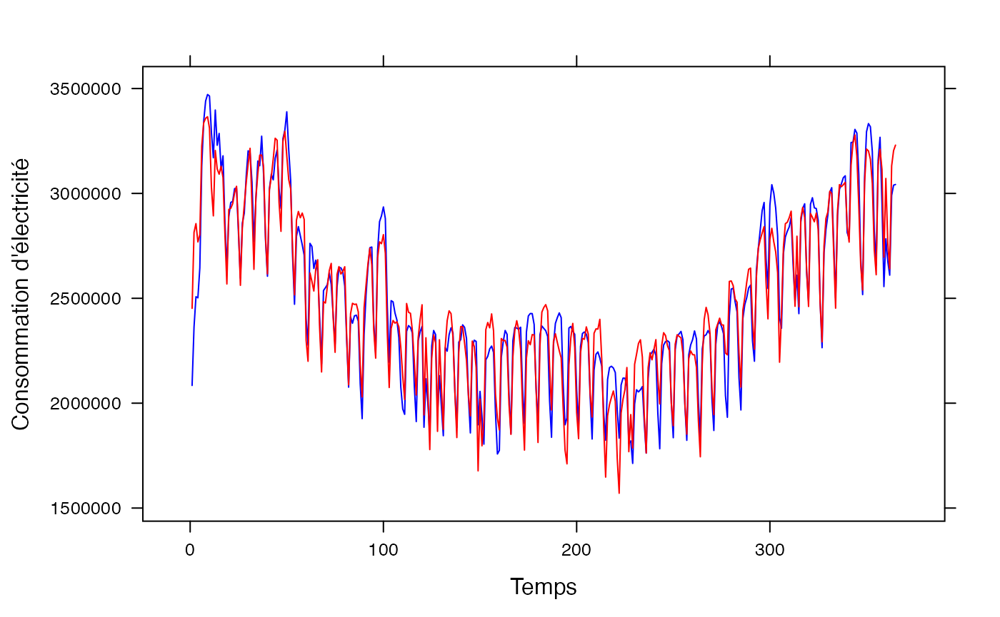
Exercice 10.15 : Un modèle « à la main »
pred <- predict(res.lm_conso_all_ejp)
lattice::xyplot(conso_temp$conso+pred~conso_temp$t,type="l",xlab="Temps",ylab="Consommation d'électricité",col=c("blue","red"))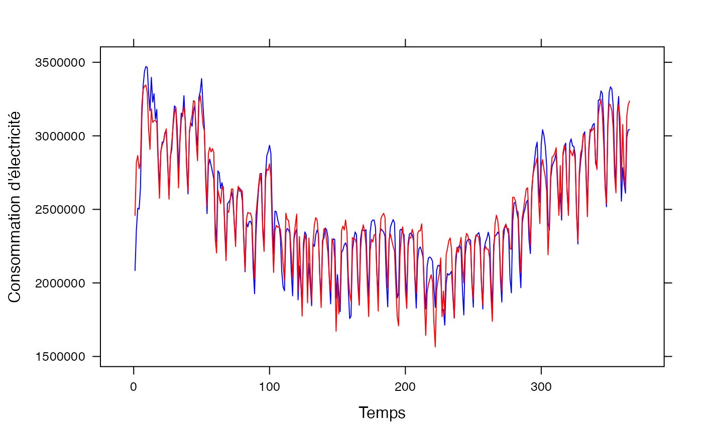
Exercice 10.16 : Amélioration du modèle
Création de la variable catégorielle pour la variable température
temp_cat <- matrix(0,nrow=365)
for (i in 1:365)
{if (conso_temp$temp[i] < 15) {temp_cat[i]="< 15°C"}
else {temp_cat[i]=">= 15°C"}
}
conso_temp <- data.frame(conso_temp,temp_cat)Modèle avec interaction
res.lm_conso_interaction <- lm('conso~temp_cat+temp_cat:temp+nom_jour+mois+ferie',data=conso_temp)
summary(res.lm_conso_interaction)
#>
#> Call:
#> lm(formula = "conso~temp_cat+temp_cat:temp+nom_jour+mois+ferie",
#> data = conso_temp)
#>
#> Residuals:
#> Min 1Q Median 3Q Max
#> -310536 -44343 5330 50004 219595
#>
#> Coefficients:
#> Estimate Std. Error t value Pr(>|t|)
#> (Intercept) 2507322 42119 59.529 < 2e-16 ***
#> temp_cat>= 15°C -801107 62550 -12.807 < 2e-16 ***
#> nom_jourJeudi 449495 16904 26.592 < 2e-16 ***
#> nom_jourLundi 381074 16782 22.708 < 2e-16 ***
#> nom_jourMardi 440276 16724 26.325 < 2e-16 ***
#> nom_jourMercredi 438833 16657 26.345 < 2e-16 ***
#> nom_jourSamedi 161271 16713 9.650 < 2e-16 ***
#> nom_jourVendredi 407964 16749 24.357 < 2e-16 ***
#> moisAvril 225840 34140 6.615 1.43e-10 ***
#> moisDécembre 491569 38135 12.890 < 2e-16 ***
#> moisFévrier 387779 39608 9.790 < 2e-16 ***
#> moisJanvier 364928 39757 9.179 < 2e-16 ***
#> moisJuillet 161472 22902 7.050 9.87e-12 ***
#> moisJuin 152211 23042 6.606 1.51e-10 ***
#> moisMai 118947 32258 3.687 0.000263 ***
#> moisMars 197024 36149 5.450 9.63e-08 ***
#> moisNovembre 465714 36539 12.746 < 2e-16 ***
#> moisOctobre 273485 34966 7.821 6.51e-14 ***
#> moisSeptembre 140706 29777 4.725 3.36e-06 ***
#> ferieoui -430840 26782 -16.087 < 2e-16 ***
#> temp_cat< 15°C:temp -55429 2003 -27.679 < 2e-16 ***
#> temp_cat>= 15°C:temp 1162 3254 0.357 0.721318
#> ---
#> Signif. codes: 0 '***' 0.001 '**' 0.01 '*' 0.05 '.' 0.1 ' ' 1
#>
#> Residual standard error: 85100 on 343 degrees of freedom
#> Multiple R-squared: 0.96, Adjusted R-squared: 0.9575
#> F-statistic: 391.8 on 21 and 343 DF, p-value: < 2.2e-16
SCT <- sum((conso_temp$conso-mean(conso_temp$conso))^2)
resid <- res.lm_conso_interaction$residuals
SCR_interaction <- 364*var(resid)
SCE_interaction <- SCT-SCR_interactionModèle sans interaction
res.lm_conso_sans_inter <- lm('conso~temp+nom_jour+mois+ferie',data=conso_temp)
summary(res.lm_conso_sans_inter)
#>
#> Call:
#> lm(formula = "conso~temp+nom_jour+mois+ferie", data = conso_temp)
#>
#> Residuals:
#> Min 1Q Median 3Q Max
#> -457304 -63748 -802 65726 268560
#>
#> Coefficients:
#> Estimate Std. Error t value Pr(>|t|)
#> (Intercept) 2615465 54049 48.391 < 2e-16 ***
#> temp -37181 2030 -18.320 < 2e-16 ***
#> nom_jourJeudi 451690 21913 20.613 < 2e-16 ***
#> nom_jourLundi 380006 21832 17.406 < 2e-16 ***
#> nom_jourMardi 437513 21764 20.103 < 2e-16 ***
#> nom_jourMercredi 439124 21660 20.274 < 2e-16 ***
#> nom_jourSamedi 162645 21738 7.482 6.13e-13 ***
#> nom_jourVendredi 412078 21753 18.943 < 2e-16 ***
#> moisAvril -65809 37110 -1.773 0.077054 .
#> moisDécembre 276367 45956 6.014 4.62e-09 ***
#> moisFévrier 201983 48961 4.125 4.64e-05 ***
#> moisJanvier 188074 49415 3.806 0.000167 ***
#> moisJuillet 72696 28547 2.547 0.011313 *
#> moisJuin 64533 28759 2.244 0.025470 *
#> moisMai -189332 33090 -5.722 2.29e-08 ***
#> moisMars -96908 39362 -2.462 0.014307 *
#> moisNovembre 185527 40742 4.554 7.32e-06 ***
#> moisOctobre -12864 38341 -0.336 0.737432
#> moisSeptembre -110907 31373 -3.535 0.000463 ***
#> ferieoui -427425 34848 -12.265 < 2e-16 ***
#> ---
#> Signif. codes: 0 '***' 0.001 '**' 0.01 '*' 0.05 '.' 0.1 ' ' 1
#>
#> Residual standard error: 110800 on 345 degrees of freedom
#> Multiple R-squared: 0.9318, Adjusted R-squared: 0.9281
#> F-statistic: 248.2 on 19 and 345 DF, p-value: < 2.2e-16
resid <- res.lm_conso_sans_inter$residuals
SCR_sans_inter <- 364*var(resid)
SCE_sans_inter <- SCT-SCR_sans_inter
f_inter=((SCE_interaction-SCE_sans_inter)/(2))/(SCR_interaction/344)
p_val_inter = 1-pf(f_inter,2,344)
variable <- "interaction"
f_partiel <- f_inter
p_value <- p_val_inter
nu_1 <- 2
nu_2 <- 344
tab_result <- data.frame(variable,f_partiel,nu_1,nu_2,p_value)
pred <- predict(res.lm_conso_interaction)
lattice::xyplot(conso_temp$conso+pred~conso_temp$t,type="l",xlab="Temps",ylab="Consommation d'électricité",col=c("blue","red"))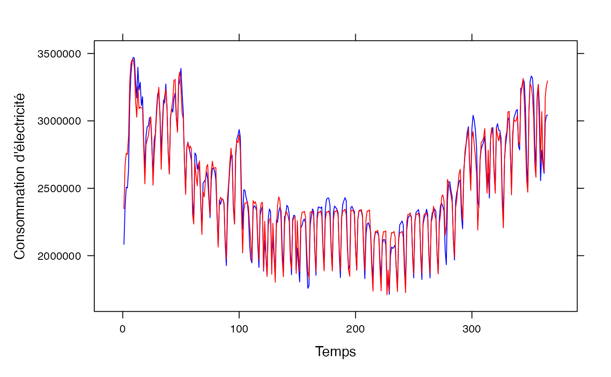